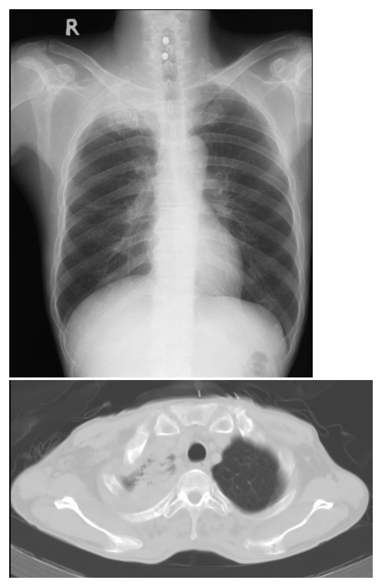
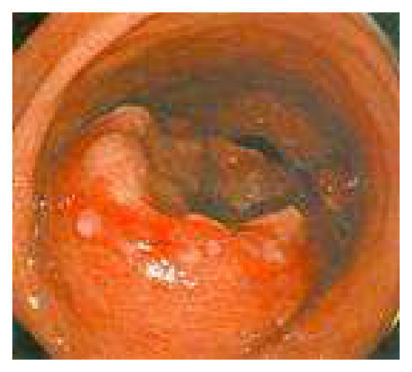
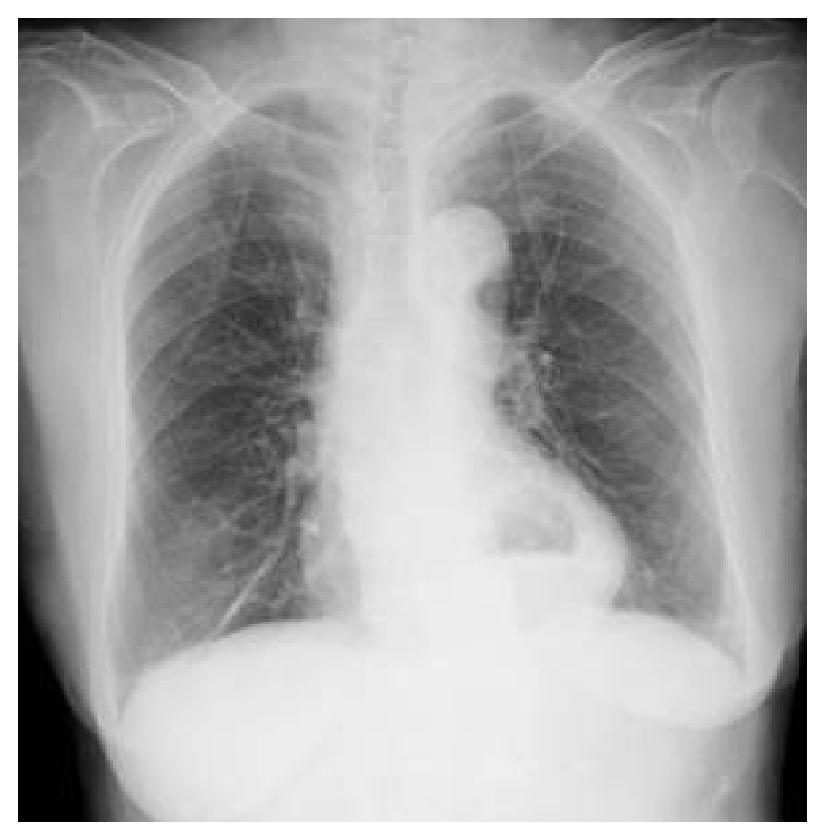

開卷有益 ／
醫師 ／ 醫學（三）（包括內科、家庭醫學科等科目及其相關臨床實例與醫學倫理） ／ 105 年第 1 次105 年第 1 次醫師醫學（三）（包括內科、家庭醫學科等科目及其相關臨床實例與醫學倫理）試題與答案
這一頁是民國 105 年第 1 次醫師醫學（三）（包括內科、家庭醫學科等科目及其相關臨床實例與醫學倫理）的整份歷屆試題，共 80 題，題目與標準答案出自考選部「國家考試試題及測驗式試題答案」開放資料，其中 80 題附有詳解。以下逐題列出題幹、選項與答案；要計時作答或記錄成績，請用線上練習。
考選部原始場次代碼：105020
線上作答這一科 →
全部 80 題
第 1 題
51歲男性病患，因為近半年來右上背酸痛和右上肢麻痹和無力到院就醫。他因這些病症在他院接受止痛藥物治療和手術治療頸椎椎間盤突出開刀，但症狀未見改善。到院前三個月，他開始出現右眼皮下垂和視力模糊。他過去抽菸，一天一包達三十年之久。到院胸部X光和電腦斷層檢查如圖。多次痰液微生物顯微鏡檢和培養均為陰性。以下何者是最有可能的診斷？

（A） pancoast tumor（B） 過敏性肺部氣管麴菌感染（allergic bronchopulmonary aspergillosis）（C） 肺膿瘍（lung abscess）（D） 肺部動脈靜脈畸形（arterio-venous malformation of the lung）答案：（A）
詳解與考點 正解：本題的右上背痛、右上肢麻痺與無力，代表肺尖腫瘤侵犯下臂神經叢；右眼皮下垂與視力模糊則提示 Horner syndrome。胸部 X 光可見右肺尖不規則陰影，電腦斷層亦顯示右肺尖部腫塊性病灶，且病人有 30 pack-years 吸菸史，最符合肺尖溝腫瘤（Pancoast tumor），故選 A。Pancoast tumor 多為肺部非小細胞癌，因位於肺尖而容易先向胸壁、臂神經叢與交感神經鏈局部侵犯，未必以咳嗽或痰液檢查異常為首發表現。
B：過敏性肺部氣管麴菌感染（allergic bronchopulmonary aspergillosis）多發生於氣喘或囊性纖維化病人，典型為反覆喘鳴、嗜酸性球增多、總 IgE 上升及中央型支氣管擴張；不能解釋本例的肺尖腫塊、臂神經叢症狀與 Horner syndrome。
C：肺膿瘍（lung abscess）常有發燒、膿性痰與感染性發炎表現，影像多見含氣液面的厚壁空洞；本例多次痰液顯微鏡檢查與培養陰性，且神經學症狀及肺尖局部侵犯型態不符合。
D：肺部動脈靜脈畸形（arterio-venous malformation of the lung）在影像上通常為與供、引流血管相連的圓形或分葉狀血管病灶，可造成低氧血症或右向左分流；不會造成肺尖胸壁侵犯、上肢神經症狀及同側 Horner syndrome。
本題考點：肺尖溝腫瘤（Pancoast tumor）常為肺部非小細胞癌，侵犯下臂神經叢可致肩背痛與上肢神經症狀；Horner syndrome 為交感神經鏈受侵的線索，表現可包括同側眼瞼下垂、縮瞳與無汗；胸部電腦斷層（computed tomography, CT）可評估肺尖腫瘤與胸壁結構的關係。
第 2 題
85歲的陳婆婆最近3個月內跌倒了3次，還好都沒有明顯的受傷，今天來到門診做跌倒評估，醫師發現她有使用安眠藥的習慣，白內障導致她視力不佳，下肢肌力也不足，下列各項醫療建議，何者最不合適？
（A） 藥物調整，減少安眠藥使用，教導正確的睡眠衛生習慣（B） 尋求眼科醫師幫忙，考慮開刀治療白內障（C） 利用運動與復健增加下肢肌力（D） 服用維生素B增加下肢肌力答案：（D）
詳解與考點 正解：本題問「最不合適」的跌倒預防建議。病人有安眠藥、視力不佳與下肢無力等可介入危險因子；維生素 B 並不能直接矯正下肢肌力不足或降低跌倒風險，故（D）最不合適。
A：減少安眠藥並教導睡眠衛生，可降低鎮靜、反應變慢與夜間平衡受影響等跌倒風險，屬合理介入。
B：白內障造成視力不佳會增加環境辨識與步態安全問題，轉介眼科評估並考慮治療是適當方向。
C：運動與復健可改善下肢肌力、平衡與步態，是多重面向跌倒預防的重要措施。
本題考點：老年跌倒（falls in older adults）常為多重因素所致；藥物檢視（medication review）應處理鎮靜安眠藥等可逆風險；肌力與平衡訓練（strength and balance training）可降低跌倒危險。
第 3 題
胡女士64歲，有糖尿病和瓣膜性心臟病病史，一週前拔牙後便開始高燒合併運動氣促，尿量減少。於急診室量得病人血壓為114/80 mmHg，體溫39℃，脈搏速128/min，呼吸速率26/min，且在病人心尖（apex）可聽到明顯之收縮期雜音，由以上初步病史與身體診察，那一個瓣膜最可能被感染？
（A） 主動脈瓣（B） 肺動脈瓣（C） 二尖瓣（D） 三尖瓣答案：（C）
詳解與考點 正解：拔牙後持續高燒，合併既有瓣膜性心臟病與新的心尖部收縮期雜音，應高度懷疑感染性心內膜炎（infective endocarditis）侵犯二尖瓣。二尖瓣閉鎖不全的雜音最清楚處在心尖部，故選 C。
A：主動脈瓣病變的雜音通常以胸骨右上緣或左胸骨緣較明顯，與題幹指定的心尖部位置不符。
B：肺動脈瓣位於右心流出道，相關雜音多在胸骨左上緣較明顯；此病人沒有支持該瓣膜的聽診定位。
D：三尖瓣閉鎖不全可有收縮期雜音，但最常在左下胸骨緣聽見，常隨吸氣增強，不是典型的心尖部雜音。
本題考點：感染性心內膜炎（infective endocarditis）須結合菌血症風險、發燒與新發或改變的心雜音判斷；二尖瓣逆流（mitral regurgitation）常在心尖部出現收縮期雜音；心雜音定位（murmur localization）有助推測受累瓣膜。
第 4 題
65歲男性患者二週前因急性心肌梗塞住院接受冠狀動脈支架置放後出院，今日因為胸痛與輕微發燒（37.8攝氏度）而回診。沒有呼吸窘迫，肺部聽診沒有囉音，心臟沒有出現新的雜音、奔馬音（gallop）或心包摩擦音（friction rub）。初步檢查排除了感染情況，心電圖與出院之前做比較沒有變化。下列那一項治療較恰當？
（A） 給予類固醇（B） 給予高劑量aspirin（C） 給予抗凝血劑（anticoagulant）（D） 加重狹心症藥品（antianginal drugs）答案：（B）
詳解與考點 正解：急性心肌梗塞後約 2 週出現胸痛與低度發燒，已排除感染，心電圖無新缺血變化，且無心衰竭或新雜音；此時要考慮心肌梗塞後心包膜炎（post-myocardial infarction pericarditis）。高劑量 aspirin 具抗發炎與止痛作用，為較恰當治療，故選 B。
A：類固醇可抑制發炎，但在心肌梗塞後一般不作為首選，可能干擾心肌修復，故不如（B）適當。
C：抗凝血劑不能治療心包膜發炎所致的胸痛，並可能增加心包積血風險，非本題首選。
D：加重抗狹心症藥物適合持續缺血性胸痛；但題幹心電圖與出院前無變化且臨床線索較支持心包膜炎，而非再發缺血。
本題考點：心肌梗塞後心包膜炎（post-myocardial infarction pericarditis）可出現胸痛與低度發燒；心包膜炎（pericarditis）的治療重點為抗發炎止痛；缺血性胸痛（ischemic chest pain）與心包膜炎須依時序、心電圖及理學檢查鑑別。
第 5 題
門診來了一位52歲男性進行體檢，身高167公分，體重87公斤，平日沒有不適。身體診察發現血壓132/84毫米汞柱，心跳每分鐘72次，身體質量指數（BMI）31 kg/m2，其他身體檢查正常。在目前的血壓值所處的範圍，考慮前面的敘述，下列那一種生活型態修正對於降低血壓數值的效果最明顯？
（A） 每天慢走十分鐘，每週四次（B） 每天作息正常（C） 減重大約九公斤（D） 每日限鹽小於六公克答案：（C）
詳解與考點 正解：BMI 31 kg/m2 的肥胖男性，題目問在這些生活型態介入中何者降血壓效果最明顯。減重約 9 kg 能直接降低肥胖相關的血壓負荷，且該幅度的體重下降通常帶來最顯著的降壓效益，故選 C。
A：規律快走有助降壓，但每天 10 分鐘、每週 4 次的運動量有限，預期效果不如顯著減重。
B：規律作息可改善整體健康與睡眠，但不是有明確、強力降血壓效果的核心生活介入。
D：限鹽有助降低血壓，尤其對鹽敏感者；它看似是重要誘答，但在此肥胖病人所列介入中，約 9 kg 的減重效果更明顯。
本題考點：肥胖（obesity）是高血壓的重要可逆危險因子；體重控制（weight reduction）可有效降低血壓；非藥物降壓（nonpharmacologic blood pressure reduction）亦包括規律運動與減少鈉攝取。
第 6 題
病人在門診自訴吞嚥困難已有一年之久，且常伴隨中段胸骨後方有東西卡住的感覺。吞嚥困難僅限於固態食物，喝流質東西則沒有困難。但並非每餐都會出現，時好時壞。病人也沒有體重減輕之現象。身體診察沒有異常發現。關於這位病人之診斷，下列各項敘述，何者正確？
（A） 本病人之診斷，很可能是achalasia（B） 本病人之致病機轉可能在於食道蠕動異常（C） 鋇劑攝影（barium meal study）對本病人之診斷很有效益（D） 此等病人雖非食道癌，其治療仍以手術為主答案：（C）
詳解與考點 正解：吞嚥困難只限固態食物、時好時壞、無體重減輕，較支持食道內結構性、間歇性的狹窄或環狀病灶，而非典型運動障礙。鋇劑攝影（barium meal study）可顯示食道腔內狹窄、食道環或其他結構異常，因此對診斷很有幫助，故選 C。
A：achalasia 通常造成固態與液態食物都逐漸吞嚥困難，主因是下食道括約肌鬆弛失常，與本題僅固態食物受阻不符。
B：食道蠕動異常多造成固體與液體吞嚥皆有困難；本題的間歇性固態吞嚥困難較像機械性阻塞，因此不能以蠕動異常作主要解釋。
D：此類良性、間歇性機械性病灶不以手術為主；治療應取決於確認的病因，必要時可採內視鏡方式處理。
本題考點：食道吞嚥困難（esophageal dysphagia）若固體先受影響，應考慮機械性阻塞；食道運動障礙（esophageal motility disorder）常同時影響固體與液體；鋇劑攝影（barium swallow study）可評估食道結構與吞嚥動態。
第 7 題
許先生有肝硬化合併腹水，也出現肝腦病變。最近被發現有日夜昏睡、意識不清的現象，抽血檢查發現NH3 = 110 µg/dL（normal range：19～60），下列何者不是此等病情常見的誘發因子？
（A） 便秘（B） 血鉀過高（C） 腸胃道出血（D） 感染答案：（B）
詳解與考點 正解：本題問肝腦病變（hepatic encephalopathy）「不是」常見誘發因子。低血鉀會促進腎臟產氨並加重肝腦病變，臨床上常見的是低血鉀而非高血鉀，因此（B）血鉀過高不是典型誘發因子，故選 B。
A：便秘使腸道內含氮物停留時間增加、氨生成與吸收增加，為常見誘發因素，故非答案。
C：腸胃道出血使腸腔內蛋白質負荷上升，細菌代謝後增加氨生成，常誘發肝腦病變。
D：感染會增加代謝壓力與發炎反應，且常伴隨脫水或腎功能惡化，是肝硬化病人肝腦病變的常見誘因。
本題考點：肝腦病變（hepatic encephalopathy）與氨（ammonia）累積有關；誘發因子（precipitating factors）包括便秘、腸胃道出血、感染與電解質異常；低血鉀（hypokalemia）比高血鉀更常促進此病況惡化。
第 8 題
69歲男性退休高中老師，沒有糖尿病史，但是有慢性腎臟病史，3年前的血液肌酸酐2.6mg/dL。4週前打噴嚏後出現眼眶周圍紫斑，3週前腹瀉、瀝青便（tarry stool）、少尿、水腫、端坐呼吸。現在理學檢查身高160 cm，體重60 kg，肝脾明顯腫大，胸部X光心臟擴大,兩側中心肺泡浸潤。腎臟超音波左腎長度11.5 cm，右腎長度11.0 cm，血中血色素7.5g/dL，血中肌酸酐4.8 mg/dL，補體正常，尿液紅血球4～6/HPF，尿液蛋白質 4+。下列何者是最可能的診斷？
（A） 類澱粉症（amyloidosis）（B） 冷凝球蛋白血症（cryoglobulinemia）（C） 韋氏肉芽腫（Wegener’s granulomatosis）（D） 全身性紅斑性狼瘡（SLE）答案：（A）
詳解與考點 正解：眼眶周圍紫斑、肝脾腫大、腎功能惡化、明顯蛋白尿、水腫與心臟擴大合併肺水腫，呈現多器官蛋白沉積的線索，最符合類澱粉症（amyloidosis）。類澱粉蛋白沉積可造成腎病症候群與心肌病變，故選 A。
B：冷凝球蛋白血症（cryoglobulinemia）可造成腎絲球腎炎與皮膚血管炎，但常見補體下降及可觸及紫斑等免疫複合體線索；本題的眼眶紫斑、腎病症候群與心臟侵犯組合較支持類澱粉症。
C：韋氏肉芽腫（Wegener’s granulomatosis）現稱 granulomatosis with polyangiitis，常見上、下呼吸道病灶與快速進行性腎炎，尿中常有較明顯血尿；無法良好解釋大量蛋白尿、心肌病變與眼眶紫斑。
D：全身性紅斑性狼瘡（SLE）可引起腎炎，但本例為年長男性，補體正常，且多器官表現特別指向蛋白沉積疾病；因此（D）雖能解釋部分腎臟表現，整體並不如（A）吻合。
本題考點：類澱粉症（amyloidosis）可累及腎臟造成蛋白尿與腎病症候群；心臟類澱粉沉積（cardiac amyloidosis）可造成心肌病變與心衰竭；眼眶周圍紫斑（periorbital purpura）是提示全身性類澱粉沉積的臨床線索。
第 9 題
一位罹患僵直性脊椎炎的患者，有一天突覺左眼腫脹、怕光及視力模糊。下列何者為首選治療藥物？
（A） methotrexate（B） hydroxychloroquine（C） local glucocorticoid administration（D） azathioprine答案：（C）
詳解與考點 正解：僵直性脊椎炎合併突然單眼腫脹、畏光與視力模糊，是急性前葡萄膜炎（acute anterior uveitis）的典型線索。首要目標是迅速抑制眼內局部發炎，因此以（C）局部 glucocorticoid administration 為首選，可直接控制前房發炎，故選 C。
A：methotrexate 是系統性免疫調節藥，可用於反覆或難治性葡萄膜炎的長期控制，但起效並非急性單眼發作的首選處置。
B：hydroxychloroquine 主要用於特定全身性自體免疫疾病的疾病修飾治療，不能取代急性前葡萄膜炎所需的局部抗發炎治療。
D：azathioprine 也是較偏向長期免疫抑制的選擇；它看似能治療免疫性發炎，但不適合作為眼部急性發作當下的首選。
本題考點：急性前葡萄膜炎（acute anterior uveitis）常與脊椎關節炎（spondyloarthritis）相關；局部糖皮質激素（local glucocorticoid）是控制急性眼前節發炎的核心治療。
第 10 題
63歲男性為HBV帶原者。5年前開始有兩手小關節、手腕、手肘、膝蓋及腳踝關節酸痛，抽血檢查發現RF：29.7 IU/mL（normal< 10 IU/mL），ESR：18 mm/1h，CRP：1.0 mg/dL（normal<0.8 mg/dL），ALT：62 U/L。下列何種檢查結果陽性對患者的鑑別診斷最有幫助？
（A） anti-nuclear antibody（B） anti-SSA/anti-SSB antibody（C） anti-cyclic citrullinated peptide antibody（D） C3 and C4答案：（C）
詳解與考點 正解：HBV 帶原者可有與感染相關的關節症狀及 RF 陽性，故僅憑 RF 不足以確診類風濕性關節炎（rheumatoid arthritis, RA）。本題要找最能鑑別 RA 的檢驗；（C）anti-cyclic citrullinated peptide antibody 對 RA 的特異性較高，若陽性最能支持真正的 RA，故選 C。
A：anti-nuclear antibody 是多種自體免疫疾病可見的篩檢性抗體，對鑑別 HBV 相關症狀與 RA 的特異性不足。
B：anti-SSA/anti-SSB antibody 較提示乾燥症等疾病，不能特異地確認此人的對稱性多關節炎為 RA。
D：C3 與 C4 主要反映補體消耗，可協助評估免疫複合體相關疾病；它看似與 HBV 的免疫現象有關，但不是辨別 RA 最有力的指標。
本題考點：類風濕性關節炎（rheumatoid arthritis）診斷需整合臨床與血清學；抗環瓜胺酸胜肽抗體（anti-cyclic citrullinated peptide antibody, anti-CCP）較 rheumatoid factor 具特異性。
第 11 題
60歲的女病患主訴右膝關節腫脹及輕微疼痛已2週。抽出關節液檢驗，其外表黃色透明，黏稠度（viscosity）甚高，白血球濃度為250 cells/mm3。最適宜的診斷為何？
（A） 痛風性關節炎（B） 退化性關節炎（C） 細菌性關節炎（D） 乾癬性關節炎答案：（B）
詳解與考點 正解：關節液黃色透明、黏稠度高且白血球僅 250 cells/mm3，屬非發炎性關節液（noninflammatory synovial fluid）。60 歲患者膝部腫脹疼痛而關節液細胞數極低，最符合（B）退化性關節炎，故選 B。
A：痛風性關節炎為發炎性晶體關節炎，關節液通常白血球增加，並可發現尿酸單鈉結晶，與本題高度黏稠、低細胞數不符。
C：細菌性關節炎常呈混濁或膿性關節液且白血球明顯上升，常伴大量嗜中性白血球，不能以 250 cells/mm3 解釋。
D：乾癬性關節炎屬發炎性關節炎，關節液也較可能有發炎細胞增加；它看似可造成膝關節腫痛，但關節液型態不支持。
本題考點：關節液分析（synovial fluid analysis）可區分非發炎性與發炎性關節病；退化性關節炎（osteoarthritis）常見透明、高黏稠度、低白血球的關節液。
第 12 題
一位36歲女性，過去無特殊不適，亦未服用任何藥物，最近兩天出現左下肢腫脹、疼痛，經血管超音波檢查發現是深層靜脈栓塞。其周邊血檢查顯示血紅素12.1 gm/dL，白血球8750/µL，血小板123000/µL，prothrombin time INR 1.1，partial thromboplastin time55”（control：28”），thrombin time 14.7”（control：5.1”），以下何者是最優先要做的檢查？
（A） lupus anticoagulant（B） factor VIII（C） protein S（D） protein C答案：（A）
詳解與考點 正解：年輕女性無明顯誘因發生深層靜脈栓塞，且 aPTT 延長，應優先檢查（A）lupus anticoagulant，以評估抗磷脂症候群（antiphospholipid syndrome）。thrombin time 延長不是 lupus anticoagulant 的典型證據，另須排除抗凝血藥物干擾、低纖維蛋白原或異常纖維蛋白原等原因。
B：factor VIII 缺乏會延長 aPTT，但典型表現為出血傾向，不能統整無誘因靜脈血栓。
C：protein S 缺乏可造成靜脈血栓，但通常不會造成磷脂依賴性凝血試驗延長。
D：protein C 缺乏亦為血栓性體質，但不符合 aPTT 延長的線索。
本題考點：lupus anticoagulant 的磷脂依賴性凝血試驗延長；抗磷脂症候群（antiphospholipid syndrome）的血栓表現；thrombin time 延長的鑑別。
第 13 題
一位65歲男性主訴倦怠、無力，手腳有刺痛感。身體檢查發現臉色蒼白，有輕微黃疸，舌頭表面平滑，味蕾萎縮；神經學檢查顯示對振動(vibration)的感覺變差。血液檢查顯示血紅素7.2 gm/dL，平均紅血球體積110 fL，網狀紅血球1.1%，白血球2780/µL，分類正常，血小板98000/µL；全膽紅素（bilirubin）2.3 mg/dL，直接型0.5 mg/dL，AST 52 U/L（正常0～37），ALT 38 U/L （正常0～41），LDH 780 IU/L（正常140～271）。這位病人最可能的診斷為？
（A） aplastic anemia（B） iron deficiency anemia（C） pernicious anemia（D） hemolytic anemia答案：（C）
詳解與考點 正解：MCV 110 fL 的巨球性貧血合併舌炎、感覺振動變差與三系血球低下，指向維生素 B12 缺乏；間接膽紅素與 LDH 升高則反映無效造血造成的細胞內溶血。選項中最符合 B12 缺乏病因與臨床表現的是（C）pernicious anemia，故選 C。
A：aplastic anemia 可有全血球低下，但通常是骨髓衰竭，不能解釋巨球性變化、舌炎與後索感覺障礙。
B：iron deficiency anemia 典型為小球性、低色素性貧血，與 MCV 110 fL 完全相反。
D：hemolytic anemia 可使間接膽紅素及 LDH 上升，因而看似吻合；但單純周邊溶血通常有網狀紅血球上升，不能解釋本題的巨球性貧血與神經症狀。
本題考點：惡性貧血（pernicious anemia）造成維生素 B12 缺乏；巨球性貧血（megaloblastic anemia）可合併無效造血、舌炎及後索神經病變。
第 14 題
一位53歲家庭主婦，未曾抽菸，最近被發現有肺癌，且有肋膜侵犯及積水，無法開刀清除乾淨。其腫瘤細胞有epidermal growth factor receptor（EGFR）激活突變（activationmutation）。此時最適當的治療為？
（A） gefitinib（B） bevacizumab（C） sunitinib（D） trastuzumab答案：（A）
詳解與考點 正解：無法完整切除的肺癌已有肋膜侵犯與積水，且腫瘤檢出 EGFR activating mutation；這個分子標記直接觸發 EGFR tyrosine kinase inhibitor 的治療選擇。（A）gefitinib 可抑制突變型 EGFR 訊號，最符合標靶治療原理，故選 A。
B：bevacizumab 是抑制 VEGF 的抗血管新生藥物，並非依 EGFR 活化突變所選用的直接標靶。
C：sunitinib 抑制多種受體酪胺酸激酶，常用情境不同，不能以本題的 EGFR 突變作為選用依據。
D：trastuzumab 的標靶是 HER2；它看似也是腫瘤單株抗體治療，但本題提供的是 EGFR 而非 HER2 異常。
本題考點：非小細胞肺癌（non-small cell lung cancer）的分子檢測可指引治療；EGFR activating mutation 對 EGFR tyrosine kinase inhibitor，如 gefitinib，具預測治療反應的意義。
第 15 題
一位70歲男性病人因右側肋膜積液（pleural effusion）掛胸腔科門診，經胸腔超音波檢查並做肋膜積液抽吸送檢，肋膜積液分析發現白血球1280/mm3，neutrophil/lymphocyte ratio：8/92，蛋白質（protein）數值為3.8 g/dL，血清蛋白質為5.2 g/dL，細胞學檢查無惡性細胞，adenosine deaminase（ADA）為70 IU/L，在臺灣最可能的診斷是：
（A） 惡性肋膜積液（B） 結核性肋膜積液（C） 肺炎併發肋膜積液（D） 膿胸答案：（B）
詳解與考點 正解：肋膜液蛋白質 3.8 g/dL／血清蛋白質 5.2 g/dL=0.73，高於 0.5，符合滲出液（exudate）。再加上淋巴球占 92% 與 ADA 70 IU/L 的高值，在臺灣最符合（B）結核性肋膜積液，故選 B。
A：惡性肋膜積液也可為淋巴球優勢的滲出液，因此看似合理；但本題細胞學未見惡性細胞且 ADA 顯著升高，更支持結核性病因。
C：肺炎併發肋膜積液通常較偏嗜中性白血球優勢，與本題 neutrophil/lymphocyte 為 8/92 不符。
D：膿胸常有明顯化膿性外觀與嗜中性白血球優勢，臨床和檢體表現皆不符合此淋巴球性積液。
本題考點：Light 準則（Light's criteria）用於辨認滲出性肋膜積液；結核性肋膜積液（tuberculous pleural effusion）常呈淋巴球優勢且 ADA 升高。
第 16 題
64歲男性有糖尿病和高血壓病史，五天來有發燒、寒顫、右上腹痛，無解尿困難或疼痛情形；腹部超音波發現右肝有4.5公分的異質性病灶，肝內膽道無擴大情形。需氧和厭氧血液培養瓶皆長出革蘭氏陰性桿菌。依此病況，最可能之病原菌為何？
（A） Pseudomonas aeruginosa（B） Bacteroides fragilis（C） Enterobacter cloacae（D） Klebsiella pneuomoniae答案：（D）
詳解與考點 正解：糖尿病患者出現發燒、寒顫、右上腹痛與單一肝膿瘍，血液培養長出革蘭氏陰性桿菌，且沒有膽道擴張或泌尿道症狀，是臺灣常見的侵襲性 Klebsiella 肝膿瘍圖像。最可能病原為（D）Klebsiella pneumoniae，故選 D。
A：Pseudomonas aeruginosa 多見於特定醫療照護暴露或免疫低下情境，並非本題糖尿病社區型單發肝膿瘍的典型病原。
B：Bacteroides fragilis 為厭氧菌，常與腹腔感染及混合菌感染相關；題幹的典型宿主與圖像較支持 Klebsiella。
C：Enterobacter cloacae 可引起院內感染，但不是此類糖尿病相關原發性肝膿瘍最具代表性的病原。
本題考點：化膿性肝膿瘍（pyogenic liver abscess）的臨床判讀；Klebsiella pneumoniae liver abscess 與糖尿病及臺灣社區型單一肝膿瘍密切相關。
第 17 題
下列有關評估營養狀態之敘述，何者錯誤？
（A） blood urea nitrogen（BUN）若低於8 mg/dL，代表蛋白質的攝取可能不足（B） serum creatinine若低於0.6 mg/dL，代表因長期能量攝取不足而肌肉耗損（musclewasting）（C） prothrombin time延長，表示可能有維生素 K 缺乏（D） serum total iron binding capacity（TIBC）> 500 µg/dL代表蛋白質攝取不足，可能有惡性營養不良（kwashiorkor）答案：（D）
詳解與考點 正解：本題問錯誤敘述。蛋白質營養不良時，肝臟合成轉鐵蛋白下降，總鐵結合能力（total iron binding capacity, TIBC）應降低；TIBC 超過 500 µg/dL 較提示缺鐵狀態，而非蛋白質攝取不足或 kwashiorkor。因此錯誤的是（D），故選 D。
A：BUN 偏低可反映尿素生成的氮來源不足，確可作為蛋白質攝取不足的可能線索之一，故非答案。
B：serum creatinine 偏低可反映肌肉量減少；長期能量攝取不足造成 muscle wasting 時可能出現此現象，敘述合理。
C：prothrombin time 延長可見於維生素 K 缺乏，因維生素 K 參與多個凝血因子的活化，故敘述正確。
本題考點：營養評估（nutritional assessment）須結合多項生化指標；總鐵結合能力（TIBC）在缺鐵時上升，在蛋白質合成不足時反而可能下降。
第 18 題
一位因中風長期臥床之病友，平日由看護自製流質飲食經鼻胃管餵食。一個月前更換看護後，家人發現病友尾骶骨（sacrum）附近長出一個直徑3公分之壓瘡（pressure sore）。一個月來雖然每日早晚擦藥治療、勤於翻身，傷口反而擴大為直徑8公分。此病友最不可能缺乏下列何種營養素？
（A） 維生素A（B） 維生素C（C） 鋅（D） 蛋白質答案：（A）
詳解與考點 正解：長期管灌自製流質飲食、壓瘡持續擴大，關鍵是傷口修復所需的營養不足。蛋白質供應、維生素 C 的膠原蛋白生成及鋅的細胞增生與免疫功能都與傷口癒合密切相關；相較之下，最不可能是主要缺乏原因的是（A）維生素 A，故選 A。
B：維生素 C 為膠原蛋白羥化所需輔因子，缺乏會使膠原蛋白成熟與傷口癒合受損，故可能相關。
C：鋅參與細胞分裂、蛋白質合成與免疫功能，缺乏時可使傷口修復不良，故不是答案。
D：蛋白質是組織修復與免疫反應的基礎；它看似只是一般營養素，卻是長期壓瘡難以癒合時必須優先檢視的因素。
本題考點：壓瘡（pressure injury）癒合受蛋白質、鋅與維生素 C 等營養狀態影響；傷口營養支持（wound nutritional support）須同時處理攝取不足與減壓照護。
第 19 題
下列有關吸煙之敘述，何者錯誤？
（A） 吸煙者相較於未吸煙者，罹患胰臟癌與膀胱癌之風險較高（B） 吸煙會減緩theophylline、propranolol、oxazepam等藥之代謝速率，吸煙者使用此等藥物宜減量（C） 吸二手煙之小孩相較於未吸煙者，易發生中耳積水（effusion）與氣喘（D） 吸煙者相較於未吸煙者，使用口服避孕藥更容易發生缺血性中風與心肌梗塞之不良反應答案：（B）
詳解與考點 正解：本題問錯誤敘述。菸草煙霧可誘導肝臟藥物代謝酵素，使多種藥物清除加快而非變慢；因此（B）稱吸菸會減緩 theophylline、propranolol、oxazepam 的代謝並應減量，方向錯誤，故選 B。
A：吸菸會增加胰臟癌與膀胱癌等多種癌症風險，敘述正確。
C：兒童暴露二手菸與中耳積水及氣喘等呼吸道疾病風險增加有關，敘述正確。
D：吸菸與口服避孕藥併用會增加動脈血栓性事件風險，包括缺血性中風與心肌梗塞，故非答案。
本題考點：吸菸（smoking）具有致癌與心血管風險；菸草煙霧可改變藥物代謝（drug metabolism），臨床用藥需留意戒菸後藥物濃度改變。
第 20 題
有一位急性中風病友四肢完全癱瘓，肌力為0分，也無法說話，但雙眼可依指令睜眼或閉眼。為此病友評估昏迷指數（Glasgow coma scale）時，運動反應（motor response）之得分為幾分？
（A） 0（B） 1（C） 5（D） 6答案：（D）
詳解與考點 正解：本題以「能遵從指令」的傳統考法，將可依指令睜眼或閉眼判為 Glasgow coma scale 運動反應 6 分，故選（D）。惟標準臨床紀錄的運動反應須以肢體動作評估；四肢完全癱瘓時此分項應記為不可測（NT）並註明限制，不能以眼瞼動作直接替代。
A：GCS 運動反應最低為 1 分，沒有 0 分。
B：1 分代表無運動反應，與題目所採可遵從指令的判讀不符。
C：5 分為定位疼痛刺激；題目採用的判讀是更高階的遵從指令。
本題考點：格拉斯哥昏迷指數（Glasgow coma scale, GCS）的運動反應（motor response）；不可測（not testable, NT）分項的臨床註記。
第 21 題
一位酗酒的病人有神經病變、肌肉無力、心臟肥大、水腫，給予下列何種維生素最可能對病情有幫助？
（A） thiamine（B） riboflavin（C） niacin（D） folate答案：（A）
詳解與考點 正解：酗酒者出現周邊神經病變、肌肉無力、心臟肥大與水腫，是維生素 B1 缺乏造成腳氣病（beriberi）的典型組合，心臟表現尤其提示濕性腳氣病。故應給予（A）thiamine，故選 A。
B：riboflavin 缺乏較常造成口角炎、舌炎與脂漏性皮膚炎，無法完整解釋心臟肥大與水腫。
C：niacin 缺乏的典型組合是皮膚炎、腹瀉與失智，與本題的心衰竭型表現不符。
D：folate 缺乏可造成巨球性貧血，但不會是酗酒者神經病變合併水腫性心臟病的主要病因。
本題考點：硫胺素（thiamine, vitamin B1）缺乏可造成腳氣病（beriberi）；濕性腳氣病（wet beriberi）可表現為高輸出性心衰竭、水腫與心臟擴大。
第 22 題
下列何種藥物，非例行使用於治療非ST節段上升急性冠心症（non-ST elevation acutecoronary syndrome）的病患？
（A） 抗血小板藥物（aspirin，clopidogrel）（B） 靜脈注射硝酸鹽（nitrate）（C） 血栓溶解劑（fibrinolytic agent）（D） 靜脈注射肝素（heparin or low molecular weight heparin）答案：（C）
詳解與考點 正解：非 ST 節段上升急性冠心症（NSTE-ACS）以抗血小板與抗凝治療、缺血症狀控制及適當的侵入性策略為主；血栓溶解無法帶來和 ST 節段上升心肌梗塞相同的例行再灌流利益，且會增加出血風險。因此非例行使用的是（C）fibrinolytic agent，故選 C。
A：aspirin 與 clopidogrel 等抗血小板藥是 NSTE-ACS 的基本抗血栓治療，故非答案。
B：靜脈硝酸鹽可用於持續缺血性胸痛或高血壓等情境的症狀控制，並非血栓溶解藥。
D：heparin 或 low molecular weight heparin 用於抗凝，以降低血栓進展與缺血事件，屬常用處置。
本題考點：非 ST 節段上升急性冠心症（non-ST elevation acute coronary syndrome, NSTE-ACS）以抗血小板與抗凝為核心；血栓溶解治療（fibrinolytic therapy）不是其例行治療。
第 23 題
對於急性心肌梗塞的患者，考慮給予血栓溶解藥物（fibrinolytic agents，如tPA）時，下列那一項不是絕對禁忌症？
（A） 年齡超過75歲（B） 曾有過腦出血病史（C） 血壓超過180/110毫米汞柱（D） 最近3個月曾有梗塞性腦中風病史答案：（A）
詳解與考點 正解：年齡超過 75 歲會增加 fibrinolytic therapy 的出血風險，須衡量風險效益，但年齡本身不是絕對禁忌，因此（A）符合題意。
B：既往腦出血病史使顱內出血風險極高，為重要絕對禁忌。
C：血壓超過 180/110 mmHg 屬未控制嚴重高血壓，通常須先降壓再重新評估，而非永久排除血栓溶解；因此它也不宜直接稱為絕對禁忌。
D：近期梗塞性腦中風有出血性轉化風險，為重要禁忌。
本題考點：血栓溶解治療（fibrinolytic therapy）的出血風險；絕對禁忌（absolute contraindication）與可矯正相對禁忌（relative contraindication）的區別。本題因（C）的分類而具爭議。
第 24 題
僧帽瓣狹窄（mitral valve stenosis）最常見的心律不整為：
（A） 心房早期收縮（atrial premature contraction）（B） 心室早期收縮（ventricular premature contraction）（C） 心房顫動（atrial fibrillation）（D） 心房撲動（atrial flutter）答案：（C）
詳解與考點 正解：僧帽瓣狹窄造成左心房長期壓力負荷與擴大，擴大的左心房容易形成不規則的折返與電氣活動，最常見的持續性心律不整為（C）心房顫動，故選 C。
A：心房早期收縮可見於許多心房受刺激情況，但不是僧帽瓣狹窄最具代表性的心律不整。
B：心室早期收縮起源於心室，與僧帽瓣狹窄導致的左心房擴大沒有直接對應關係。
D：心房撲動也可發生於心房擴大患者，因而看似合理；但僧帽瓣狹窄最常見且最典型的心律不整仍是心房顫動。
本題考點：僧帽瓣狹窄（mitral stenosis）造成左心房擴大；心房顫動（atrial fibrillation）可導致心房血栓與全身性栓塞風險上升。
第 25 題
70歲女性因食慾變差、上腹不適、體重減輕，接受胃鏡檢查，結果如圖，下列敘述何者正確？

（A） 此疾病目前的發生率增加中（B） 去除幽門螺旋桿菌可以治癒此疾病（C） O型血型者罹患此病機會較高（D） 腸化生（intestinal metaplasia）為此病之前驅病灶（precursor lesion）答案：（D）
詳解與考點 正解：70歲女性有食慾變差、上腹不適與體重減輕，胃鏡圖可見胃腔內不規則潰瘍性病灶，邊緣隆起且表面不平整，應高度懷疑胃癌（gastric adenocarcinoma）。胃腺癌常循慢性幽門螺旋桿菌相關胃炎、萎縮性胃炎、腸化生、異生到腺癌的多步驟演進；因此腸化生（intestinal metaplasia）是胃腺癌的重要癌前病灶（precursor lesion），故選 D。
A：胃癌的整體發生率在多數地區長期趨勢是下降，與幽門螺旋桿菌感染減少、食物保存方式改善等因素有關；雖然部分地區或特定胃癌亞型的趨勢可能不同，不能據此概括為此疾病目前發生率增加。
B：幽門螺旋桿菌（Helicobacter pylori）根除可降低日後胃癌風險，尤其在尚未進展至嚴重萎縮或腸化生前較有預防效益；但圖示已屬疑似惡性腫瘤的病灶，去除細菌無法使既有胃癌治癒，仍須依分期接受內視鏡、手術及必要的全身治療。
C：O型血型與消化性潰瘍及幽門螺旋桿菌感染較常被連結，並非胃癌的典型較高風險血型；胃癌流行病學上較常提及 A 型血者風險偏高，故不能以 O 型血作為支持本題病灶的依據。
本題考點：胃癌（gastric adenocarcinoma）的胃鏡警訊包括不規則潰瘍、隆起邊緣與體重減輕；胃癌的 Correa cascade 為慢性胃炎、萎縮性胃炎、腸化生（intestinal metaplasia）、異生（dysplasia）至腺癌；幽門螺旋桿菌根除（Helicobacter pylori eradication）可降低風險，但不能治癒已形成的胃癌。
第 26 題
下列何者不會產生腹水？
（A） 肥胖（B） 肝硬化（C） 心臟衰竭（D） 腹膜發炎答案：（A）
詳解與考點 正解：腹水是腹腔內液體異常累積，常由門脈高壓、靜脈鬱血、低白蛋白或腹膜病變造成。單純（A）肥胖是脂肪組織增加，不會自行形成腹膜腔液體累積，故選 A。
B：肝硬化可因門脈高壓、鈉水滯留與低白蛋白血症產生腹水，是最常見原因之一。
C：心臟衰竭造成靜脈壓上升與體液滯留，可導致腹水，故非答案。
D：腹膜發炎會增加微血管通透性並形成滲出液，能造成腹水；它看似較少見，但病理機轉成立。
本題考點：腹水（ascites）的常見機轉包括門脈高壓（portal hypertension）、心衰竭造成的靜脈鬱血與腹膜發炎（peritonitis）造成的滲出。
第 27 題
一位50歲男性，近日無使用任何藥物，日前接受國民健康保險局推行之定量免疫法糞便潛血檢驗後，接到通知告知其糞便呈現陽性潛血反應，則以下的各種情形何者的建議正確？①若患者於檢驗前三天內曾進食富含動物血色素食物，可能造成偽陽性，建議重新檢驗②若患者無排便異常情形，可觀察並建議2年後再檢驗一次③患者自述於檢驗前一天曾有流鼻血情形，可能因此而陽性，建議重新檢驗④若患者告知半年前曾自費接受相同檢查，但報告為陰性，建議仍須接受大腸鏡檢查或大腸攝影檢查
（A） ①②③④（B） 僅①③④（C） 僅①②（D） 僅④答案：（D）
詳解與考點 正解：定量免疫法糞便潛血檢驗（fecal immunochemical test, FIT）偵測人類血紅素，陽性後即使沒有排便異常，也應接受大腸鏡或適當大腸影像檢查找出出血來源。因此四項中只有（④）正確，對應（D），故選 D。
A：此組合納入（①）（②）（③），均不正確。FIT 不受動物血色素食物影響；無症狀不能只等 2 年；流鼻血也不是其典型的偽陽性理由。
B：此組合雖包含正確的（④），但錯把（①）與（③）列入，故不正確。
C：此組合只有（①）（②），兩項皆不符合 FIT 陽性後的處置原則，且漏掉（④）。
本題考點：定量免疫法糞便潛血檢驗（fecal immunochemical test, FIT）具人類血紅素特異性；陽性篩檢結果需進一步做大腸鏡（colonoscopy）或適當診斷性檢查。
第 28 題
下列那些藥物可能會加重逆流性食道炎（reflux esophagitis）？①降血脂藥（HMG-CoAreductase inhibitor） ②高血壓用藥（calcium channel blocker） ③氣喘用藥（theophylline） ④抗過敏藥物（antihistamine）
（A） ①②③（B） 僅②③（C） ③④（D） ①②④答案：（B）
詳解與考點 正解：逆流性食道炎的關鍵機轉是下食道括約肌（lower esophageal sphincter, LES）張力下降或胃排空受影響。（②）calcium channel blocker 與（③）theophylline 都可使 LES 鬆弛、加重胃食道逆流；故正確組合為僅②③，即（B）。
A：此組合多列了（①）HMG-CoA reductase inhibitor。降血脂藥不是典型藉由降低 LES 張力而加重逆流的藥物，故不正確。
C：此組合含（③）但把（④）antihistamine 列入，且漏掉（②）；第一代抗組織胺的副作用並非本題所考的典型 LES 鬆弛藥物。
D：此組合同時誤列（①）與（④），又漏掉明確的（③），故不正確。
本題考點：胃食道逆流（gastroesophageal reflux）與下食道括約肌（lower esophageal sphincter, LES）功能失調相關；calcium channel blocker、theophylline 可降低 LES 張力而加重症狀。
第 29 題
一位34歲男性病人，因急性上腹痛至急診室求診。病人有長期飲酒史，父親有大腸癌之家族史。身體診察顯示病人無發燒、無腹瀉、無輻射性疼痛，但有輕微冒冷汗，身體向前傾可減輕疼痛，上腹有廣泛性觸痛，無shifting dullness。下列何者並非對此病人所須之第一線血液檢查？
（A） ALT（GPT），AST（GOT）（B） WBC（C） amylase（D） CEA答案：（D）
詳解與考點 正解：長期飲酒、急性上腹痛、前傾可緩解及上腹觸痛，最先想到急性胰臟炎（acute pancreatitis）。第一線血液檢查要評估胰臟炎與相關併發或鑑別；（D）CEA 是腫瘤標記，不用於此急性腹痛的第一線評估，故選 D。
A：ALT 與 AST 可協助評估肝膽來源及酒精相關肝臟異常，對急性上腹痛的初步鑑別有價值。
B：WBC 可評估發炎反應與感染線索，是急性腹痛常用的初步檢查。
C：amylase 可作為懷疑急性胰臟炎時的初步胰臟酵素檢驗；它看似不夠特異，但仍遠比 CEA 適合作為第一線評估。
本題考點：急性胰臟炎（acute pancreatitis）常見上腹痛且前傾緩解；急性腹痛初步評估使用血球計數與胰臟酵素，癌胚抗原（carcinoembryonic antigen, CEA）不是急診第一線診斷工具。
第 30 題
一位42歲女性病人之血液報告呈現HBsAg：陽性、anti-HBs antibody IgG：陽性。下列何者之判斷最合理？
（A） 此病人仍為B型肝炎帶原者（B） 此病人非B型肝炎帶原者，因為已有陽性之anti-HBs（C） 實驗檢驗錯誤，HBsAg與anti-HBs不可能均為陽性（D） 宜加作anti-HBc antibody（anti-HBc），才可作判定答案：（A）
詳解與考點 正解：HBsAg 與 anti-HBs 可同時陽性，故不能因有 anti-HBs 就否定現存 HBV 感染；題目將「帶原者」泛指現存感染時，選（A）。嚴格判定慢性帶原仍須 HBsAg 持續至少 6 個月，並結合病程與 anti-HBc IgM 等資料。
B：anti-HBs 陽性不必然排除 HBsAg 陽性的現存感染。
C：兩者可因不同病毒株、抗原抗體複合體或免疫反應而同時陽性，不可直接認定檢驗錯誤。
D：anti-HBc 有助釐清感染史與分期，但不影響 HBsAg 與 anti-HBs 可共存的判讀。
本題考點：B 型肝炎血清學（hepatitis B serology）；HBsAg 的現存感染意義；慢性 HBV 感染（chronic HBV infection）的時間判定。
第 31 題
有關自發性細菌性腹膜炎的敘述，下列何者錯誤？
（A） 最常見的細菌感染為Escherichia coli（B） 腹水感染二種以上細菌，要考慮續發性腹膜炎（如腸穿孔）的可能性（C） 病人可能無發燒及腹痛（D） 肝硬化合併腹水的病人，發生食道靜脈曲張出血時，不會增加自發性細菌性腹膜炎的發生答案：（D）
詳解與考點 正解：題目問錯誤敘述，關鍵是肝硬化腹水病人合併食道靜脈曲張出血。此時腸道菌移位、住院處置與出血相關生理變化均會提高自發性細菌性腹膜炎風險，因此出血並非「不會增加」風險；（D）錯誤，故選 D。
A：Escherichia coli 是自發性細菌性腹膜炎常見的腸道革蘭陰性致病菌，敘述正確，故非答案。
B：腹水培養出二種以上細菌較支持腸道穿孔等續發性腹膜炎，與通常單一菌種的自發性細菌性腹膜炎不同，敘述正確。
C：自發性細菌性腹膜炎症狀可不典型，部分病人沒有發燒或腹痛，須靠腹水檢驗提高警覺，敘述正確。
本題考點：自發性細菌性腹膜炎（spontaneous bacterial peritonitis, SBP）——常見腸道菌感染且症狀可隱匿；多菌感染應考慮續發性腹膜炎；靜脈曲張出血是 SBP 的高風險情境。
第 32 題
下列有關下消化道出血的敘述，何者錯誤？
（A） 出血源不明（obscure）的消化道出血，病變常在小腸，須先排除上消化道及大腸直腸病變。因此上消化道內視鏡及大腸鏡檢查一定要施行，甚至不只檢查一次即足夠（B） 嚴重的出血病例可以安排血管攝影檢查（angiography），找到出血源時可注射vasopressin或以血管栓塞（embolization）止血（C） 核醫紅血球掃描（RBC scan），偵測出血較血管攝影術敏感，可以精確定位，幫助治療（D） 如無活動性出血，除非是血管豐富（hypervascular）的腫瘤或是血管發育不良（angiodysplasia），否則血管攝影術幫助不大答案：（C）
詳解與考點 正解：核醫紅血球掃描的定位能力。RBC scan 可偵測較低速率、間歇性的出血，敏感度可優於血管攝影；但血液會在腸管內移動，解剖定位往往不夠精確，不能保證可精確定位並直接指引治療。（C）把敏感度誤當成精確定位能力，故為錯誤敘述。
A：不明原因消化道出血常需在適當品質的上消化道內視鏡與大腸鏡排除病灶後，才進一步考慮小腸來源；必要時重複檢查有其臨床理由。
B：嚴重且持續的出血可用血管攝影尋找出血點，若發現出血亦可進行血管栓塞等止血處置，敘述合理。
D：沒有活動性出血時，血管攝影不易顯示血管外滲；血管發育不良或高血管性腫瘤例外較可能提供線索，敘述正確。
本題考點：下消化道出血（lower gastrointestinal bleeding）——RBC scan 對低流量出血敏感但定位較差；血管攝影兼具診斷與栓塞治療能力，但仰賴活動性出血。
第 33 題
下列何者免疫抑制劑與FKBP-12接合，可減少IL-2之產生？
（A） cyclosporine（B） tacrolimus（C） mycophenolate mofetil（D） sirolimus答案：（B）
詳解與考點 正解：「與 FKBP-12 接合」且減少 IL-2。tacrolimus 與 FKBP-12 結合後抑制 calcineurin，阻斷 T 細胞活化所需的訊號，降低 IL-2 轉錄與生成，故選 B。
A：cyclosporine 也是 calcineurin inhibitor，但它結合的是 cyclophilin，不是 FKBP-12；看似同樣會降低 IL-2，錯在結合蛋白不同。
C：mycophenolate mofetil 抑制嘌呤新生合成，主要限制淋巴球增殖，並非經由 FKBP-12 抑制 IL-2。
D：sirolimus 亦結合 FKBP-12，但複合體抑制的是 mTOR，主要阻斷 IL-2 訊號後的細胞增殖，而不是抑制 IL-2 的產生。
本題考點：鈣調神經磷酸酶抑制劑（calcineurin inhibitors）——tacrolimus-FKBP-12 與 cyclosporine-cyclophilin 均抑制 calcineurin、降低 IL-2；mTOR inhibitor sirolimus 的作用位置不同。
第 34 題
一位55歲女性病人，過去無腎臟病史，因最近一週尿量漸減且體重增加而住院。身體診察：血壓180/110 mmHg，脈搏72/min，呼吸次數16/min，呼吸音正常，心律規則無雜音，腹部平坦無壓痛，下肢有顯著壓陷性水腫。血液檢查：血紅素10 gm/dL，白血球10500 /µL，白蛋白2.5 g/dL，尿素氮35 mg/dL，肌酸酐3.0 mg/dL；尿液檢查：蛋白質（3+），紅血球20～25顆/高倍視野，並可見到紅血球圓柱體。本病人接受腎臟切片檢查後，最適當治療方式為？
（A） 廣效性抗生素（broad-spectrum antibiotics）（B） 免疫抑制劑（immunosuppressive therapy）（C） 緊急血液透析（emergent hemodialysis）（D） 補充白蛋白（albumin infusion）答案：（B）
詳解與考點 正解：血尿、紅血球圓柱體、高血壓與腎功能下降提示腎炎性腎絲球病變。若腎臟切片證實為可接受免疫抑制治療的快速進行性或免疫性腎絲球炎，（B）才是最適當治療方向；題幹未提供病理結果，故此結論受限。
A：題目未見明確細菌感染徵象，廣效性抗生素不能作為主要治療。
C：緊急血液透析須有難治性高血鉀、嚴重酸中毒、肺水腫或尿毒症等適應症，題幹未提供。
D：補充白蛋白無法處理造成血尿、圓柱體與腎功能下降的腎絲球病變。
本題考點：腎炎症候群（nephritic syndrome）；腎臟切片（renal biopsy）對治療選擇的重要性；免疫抑制治療（immunosuppressive therapy）的病理適應症。
第 35 題
下列藥物可能引起急性腎臟損傷，而主要的作用是腎血管的影響，何者例外？
（A） 非類固醇消炎劑（nonsteroidal anti-inflammatory drugs）（B） 血管張力素阻斷劑（angiotensin-converting enzyme inhibitors）（C） 含鉑的抗癌製劑（如cisplatin）（D） 腎素抑制劑（renin inhibitors）答案：（C）
詳解與考點 正解：「主要作用是腎血管影響」的例外。cisplatin 的急性腎損傷主要來自近端腎小管細胞毒性與直接腎毒性，並非主要經由改變腎小動脈張力；（C）為例外，故選 C。
A：NSAID 抑制前列腺素生成，使入球小動脈較易收縮、腎灌流下降，屬腎血流動力學造成的腎損傷。
B：ACE inhibitor 使出球小動脈擴張，降低腎絲球內壓；在腎灌流依賴情況可使腎絲球過濾率下降，屬血管作用。
D：renin inhibitor 降低腎素－血管張力素系統活性，亦可改變出球小動脈張力與腎絲球灌流壓，屬血流動力學機轉。
本題考點：急性腎損傷（acute kidney injury）——NSAID、RAAS 抑制藥可透過入球或出球小動脈改變 GFR；cisplatin 以腎小管毒性為主。
第 36 題
有關腹膜透析和血液透析的優劣點，下列何者錯誤？
（A） 血液透析對於超過濾（ultrafiltration）的控制比較正確（B） 腹膜透析比較容易發生血脂肪升高（C） 血液透析比較常有白蛋白流失（D） 腹膜透析比較容易有低血鉀情況答案：（C）
詳解與考點 正解：比較兩種透析的蛋白質流失。腹膜透析液與腹膜交換時會持續流失蛋白質，白蛋白流失較血液透析明顯；因此（C）稱血液透析較常流失白蛋白是錯誤敘述，故選 C。
A：血液透析可由機器設定超過濾量與速率，對液體移除的即時控制通常較精確，敘述正確。
B：腹膜透析使用含葡萄糖透析液，持續吸收葡萄糖可造成血脂異常，較容易出現高血脂，敘述正確。
D：腹膜透析可因持續鉀離子清除、攝取不足或腸胃道損失而較易低血鉀，敘述正確。
本題考點：透析模式比較（peritoneal dialysis versus hemodialysis）——腹膜透析有蛋白質流失、高血脂與低血鉀傾向；血液透析的超過濾控制較精確。
第 37 題
有關angiotensin-converting enzyme inhibitors的腎臟保護作用，下列何者錯誤？
（A） 可以降低血壓（B） 可以降低蛋白尿（C） 可以增加腎絲球過濾速率（D） 可以降低出球小動脈的壓力答案：（C）
詳解與考點 正解：ACE inhibitor 的腎絲球血流動力學。它降低 angiotensin II 的出球小動脈收縮作用，使出球小動脈擴張、腎絲球內壓與蛋白尿下降；治療初期 GFR 可輕度下降，並非增加。因此（C）錯誤，故選 C。
A：ACE inhibitor 可降低全身血壓，這也是減少腎臟高壓傷害的保護作用之一，敘述正確。
B：腎絲球內壓下降可降低蛋白經濾過屏障外漏，故可減少蛋白尿，敘述正確。
D：抑制 angiotensin II 後出球小動脈壓力下降，正是降低腎絲球內高壓的關鍵機轉，敘述正確。
本題考點：ACE inhibitor 的腎臟保護（renoprotection）——出球小動脈擴張可降低腎絲球內壓與蛋白尿；初期 GFR 下降是可預期的血流動力學效應。
第 38 題
一位52歲男性因反覆發生下肢癱瘓入院，血壓168/98 mmHg，血液檢查發現：鈉146mmol/L，鉀2.0 mmol/L，氯100 mmol/L，酸鹼值7.56，重碳酸根38 mmol/L，腎素（renin）0.1 ng/mL/hr（正常值0.3～3 ng/mL/hr），血清醛固酮（aldosterone）8 ng/dL（正常值2～9ng/dL）；則下列敘述何者錯誤？
（A） 病患為留鹽激素過多狀態（mineralocorticoid excess state）（B） 應補充大量鉀離子直到病患肌肉力量恢復（C） 因血清腎素偏低，可以排除腎素分泌腫瘤（renin-secreting tumor）及續發性高醛固酮症（D） 因血清醛固酮正常，可以排除原發性高醛固酮症答案：（D）
詳解與考點 正解：高血壓、鉀 2.0 mmol/L、代謝性鹼中毒與腎素受抑制，支持留鹽激素作用過多。醛固酮 8 ng/dL 雖在參考範圍內，於低腎素、低鉀情境仍屬不當地未受抑制，不能據此排除原發性高醛固酮症，故（D）錯誤。
A：留鹽激素作用增加可造成鈉水滯留、高血壓、鉀流失與代謝性鹼中毒。
B：嚴重低血鉀合併肌無力應積極補鉀，但須依心電圖、腎功能、給藥途徑與反覆血鉀監測控制速率與總量；不能照字面理解為無上限大量補充。
C：腎素分泌腫瘤與續發性高醛固酮症通常使腎素升高，故受抑制的腎素不支持此二者。
本題考點：原發性高醛固酮症（primary aldosteronism）；低腎素高血壓；嚴重低血鉀（severe hypokalemia）的監測式補充。
第 39 題
55歲男性，有下背痛伴隨晨間僵硬（＞30分鐘）已有兩年，骨盆X光無明顯異常，病患曾有左跟踺（Achilles tendon）發炎病史，以目前病情判斷，何種疾病最有可能？
（A） 僵直性脊椎炎（ankylosing spondylitis）（B） 中軸脊椎關節炎（axial spondyloarthropathy）（C） 退化性關節炎（osteoarthritis）（D） 乾癬性關節炎（psoriatic arthritis）答案：（B）
詳解與考點 正解：就選項而言，發炎性下背痛、晨僵與跟腱附著點炎最能由（B）中軸脊椎關節炎統整。惟症狀約 53 歲才起始並不典型；正常 X 光不能直接確診，臨床仍須 MRI、HLA-B27、發炎指標及其他病因鑑別。
A：僵直性脊椎炎通常指已有放射性薦髂關節炎的影像性中軸脊椎關節炎，題目 X 光正常時較不優先。
C：退化性關節炎通常活動加重、休息改善，晨僵較短，亦不典型造成附著點炎。
D：乾癬性關節炎可有脊椎與附著點病變，但題目未提供乾癬、指甲病變或周邊關節炎線索。
本題考點：中軸脊椎關節炎（axial spondyloarthritis）；附著點炎（enthesitis）；非放射性中軸脊椎關節炎（non-radiographic axial spondyloarthritis）的鑑別限制。
第 40 題
下列對於全身性紅斑性狼瘡（SLE）病人血清中的各種自體抗體的描述，何者最為正確？
（A） anti-RNP對於診斷SLE的特異性最高（B） anti-histone抗體與SLE的腎炎最有相關（C） anti-Sm與SLE的psychosis最有相關（D） anti-phospholipid與habitual fetal loss最有相關答案：（D）
詳解與考點 正解：自體抗體與臨床表現的正確配對。抗磷脂抗體（anti-phospholipid antibody）與動靜脈血栓及反覆妊娠流失有關，habitual fetal loss 是其重要臨床表現，因此（D）最正確，故選 D。
A：anti-RNP 可見於 SLE 與混合性結締組織病，對 SLE 的特異性不如 anti-Sm，故不正確。
B：anti-histone 抗體較與藥物誘發性狼瘡相關，並非 SLE 腎炎最具相關性的抗體；看似也是狼瘡抗體，錯在臨床關聯對象。
C：anti-Sm 是 SLE 特異性高的抗體，但不是與 psychosis 最有相關的配對，故不正確。
本題考點：系統性紅斑性狼瘡自體抗體（SLE autoantibodies）——anti-Sm 特異性高；anti-histone 常見於藥物誘發性狼瘡；抗磷脂抗體與血栓及反覆流產相關。
第 41 題
一位65歲女性10年前停經後得到第一期乳癌，只以外科治療。最近發現蝕骨性骨骼病灶，證實為乳癌轉移ER+，HER2-negative，此外無其他臟器轉移，下列何者為最適當的治療？
（A） 芳香環轉化酶抑制劑+雙磷酸鹽（B） 多種藥劑化學治療 +雙磷酸鹽（C） capecitabine +雙磷酸鹽（D） 單一藥劑化學治療 +strontium-89答案：（A）
詳解與考點 正解：停經後、ER 陽性、HER2 陰性且僅骨轉移，沒有臟器危象。這類荷爾蒙受體陽性轉移性乳癌優先採內分泌治療，芳香環轉化酶抑制劑可抑制雌激素生成；骨轉移另以雙磷酸鹽降低骨相關併發症，故選 A。
B：多藥化療通常保留給疾病快速進展、臟器危象或內分泌治療不適合者；本題沒有這些線索，直接化療強度過高。
C：capecitabine 是化療藥物，雖可用於乳癌，但對此內分泌敏感且無臟器轉移的情境，不是優先治療。
D：單一化療加 strontium-89 著重症狀緩解或特定骨痛處置，無法取代針對 ER 陽性腫瘤的首選全身內分泌治療。
本題考點：荷爾蒙受體陽性轉移性乳癌（hormone receptor-positive metastatic breast cancer）——無臟器危象時優先內分泌治療；骨轉移可加骨修飾藥物（bone-modifying agents）降低骨事件。
第 42 題
下列何種病人發生缺鐵性貧血的機會最小？
（A） gastrectomy（B） menorrhagia（C） paroxysmal nocturnal hemogblobinuria（D） thalassemia答案：（D）
詳解與考點 正解：題目問發生缺鐵性貧血機會最小者。thalassemia 是珠蛋白鏈生成異常，典型為小球性貧血但不是鐵缺乏所致，反覆輸血者甚至可能有鐵負荷增加；因此（D）最不易發生缺鐵性貧血，故選 D。
A：胃切除後胃酸減少及十二指腸相關吸收改變，會影響鐵吸收，缺鐵性貧血風險增加。
B：月經過多造成長期失血，是育齡女性缺鐵性貧血常見原因，敘述方向明確。
C：陣發性夜間血紅素尿症可因血管內溶血與血紅素尿造成慢性鐵流失，仍可能導致缺鐵。
本題考點：缺鐵性貧血（iron deficiency anemia）——慢性失血、鐵吸收不良與血紅素尿可致鐵缺乏；thalassemia 的小球性貧血須與缺鐵區分。
第 43 題
以下何者被視為造血幹細胞（hematopoietic stem cell）最重要的特徵？
（A） 自我更新（self-renewal）（B） 增殖（proliferation）（C） 分化（differentiation）（D） 計畫凋亡（programmed death）本題送分，無標準答案
詳解與考點 本題官方公告送分。
第 44 題
一位30歲平常健康良好的男性，主訴2～3週來易倦。理學檢查發現結膜蒼白無黃疸、頸部兩側多個不足一公分大小淋巴結、無肝脾腫大，下肢出現無癢紅色細小斑點；末梢血檢查結果顯示：WBC 1280/µL，N/L/Mo = 5/94/1，Hb 7.5 gm/dL，MCV 86 fL，Platelet 8,000/µL，ALT 42 U/L，T. Bil 0.6 mg/dL，Cr 1.1 mg/dL，Alb 3.7 g/dL。下列何種檢驗最有利於正確診斷？
（A） 淋巴結切片（biopsy）（B） 正子造影（positron emission tomography, PET）（C） 骨髓切片（D） 血液培養（blood culture）答案：（C）
詳解與考點 正解：白血球、血紅素與血小板都明顯下降，而 MCV 正常、沒有明顯溶血或器官腫大。三系血球低下提示骨髓衰竭、浸潤或血液惡性疾病，骨髓切片最能直接評估細胞性、造血結構與異常細胞，故選 C。
A：小淋巴結切片可用於懷疑淋巴瘤，但本題淋巴結均不足 1 cm，主要異常是嚴重全血球低下，診斷效益不如骨髓檢查。
B：PET 可協助惡性腫瘤分期，卻無法取代骨髓形態與細胞學判讀；看似可搜尋淋巴瘤病灶，仍不是此情境最直接的確診檢驗。
D：血液培養用於評估菌血症；病人未提供發燒或感染性休克線索，不能解釋持續性的三系血球低下。
本題考點：全血球低下（pancytopenia）——需考慮再生不良性貧血、骨髓浸潤與血液惡性疾病；骨髓切片（bone marrow biopsy）是關鍵診斷工具。
第 45 題
cyclosporine-A（CsA）是異體造血幹細胞移植（allogeneic hematopoietic stem celltransplantation）用來預防移植物反宿主疾病（graft-versus-host disease）的重要免疫抑制劑，下列何者不是CsA常見的副作用？
（A） hypertension（B） hyperlipidemia（C） hyperglycemia（D） nephrotoxicity答案：（C）
詳解與考點 正解：題目問不是 cyclosporine-A 的常見副作用。CsA 為 calcineurin inhibitor，主要毒性包括腎血管收縮造成的腎毒性與高血壓，也可有血脂異常；相較之下，高血糖較是 tacrolimus 常被強調的不良反應，故選 C。
A：CsA 可造成腎血管收縮與鈉滯留，臨床上高血壓是常見副作用，故非答案。
B：CsA 可伴隨脂質代謝異常，hyperlipidemia 可見，故非答案。
D：CsA 的劑量相關腎毒性是重要限制因素，須監測腎功能，敘述正確。
本題考點：cyclosporine 的不良反應（cyclosporine adverse effects）——腎毒性、高血壓與高血脂是重要副作用；tacrolimus 較常與糖尿病傾向連結。
第 46 題
下列何者為抗癌化學藥物cisplatin之副作用？
（A） 血鈣過高症（B） 血鎂過低症（C） 血鈉過低症（D） 血氯過高症本題送分，無標準答案
詳解與考點 本題官方公告送分。
第 47 題
凝血因子X（coagulation factor X）活化為Xa的反應中，下列何因子沒有參與？
（A） factor Va（B） factor VIIa（C） factor VIIIa（D） factor IXa答案：（A）
詳解與考點 正解：factor X 活化為 Xa 的反應。外因性 tenase 由 tissue factor 與 factor VIIa 活化 factor X；內因性 tenase 則由 factor IXa 與 factor VIIIa 活化 factor X。factor Va 的角色在 Xa 已生成後，與 Xa、鈣離子及磷脂形成 prothrombinase，促進凝血酶生成，未參與 X 活化，故選 A。
B：factor VIIa 與 tissue factor 組成外因性途徑的 tenase complex，可活化 factor X，故非答案。
C：factor VIIIa 是 factor IXa 的輔因子，構成內因性 tenase complex，參與 factor X 活化。
D：factor IXa 是內因性 tenase 的酵素成分，直接參與 factor X 轉為 Xa。
本題考點：凝血級聯（coagulation cascade）——外因性 tenase 為 tissue factor-factor VIIa，內因性 tenase 為 factor IXa-factor VIIIa；factor Va 屬 prothrombinase 複合體。
第 48 題
胸部電腦斷層發現毛玻璃狀病灶（ground glass opacity, GGO），有關其臨床意義的敘述，下列何者錯誤？
（A） 有可能是早期adenocarcinoma（B） 有可能是atypical adenomatous hyperplasia（C） 如果是solid GGO，很可能是慢性發炎，定期追蹤即可（D） 有可能是肺腺癌的前身，應積極正確診斷答案：（C）
詳解與考點 正解：胸部 CT 的毛玻璃病灶及其惡性風險。含實性成分的病灶通常比純毛玻璃病灶更須警覺侵襲性腺癌可能，不能僅以「很可能慢性發炎」而一概定期追蹤；（C）過度淡化其風險，故為錯誤敘述。
A：早期肺腺癌可呈現毛玻璃樣病灶，尤其是持續存在或逐漸改變的病灶，敘述正確。
B：atypical adenomatous hyperplasia 可呈現小型毛玻璃結節，屬肺腺癌譜系的病變之一，敘述正確。
D：部分毛玻璃病灶可能位於肺腺癌發展譜系，應依病灶大小、持續性與實性成分做正確評估，不能忽略，敘述正確。
本題考點：毛玻璃病灶（ground-glass opacity, GGO）——可見於發炎與肺腺癌譜系；持續存在、增大或出現實性成分時，惡性風險提高並須積極評估。
第 49 題
60歲男性，主述長期咳痰，呼吸不暢，最近有關節痠痛症狀。身體檢查時看到杵狀指（clubbing fingers）。下列那些疾病應優先列入鑑別診斷？①肺癌 ②急性肺炎 ③支氣管擴張症 ④先天性心臟病 ⑤肝硬化 ⑥克隆氏症（Crohn’s disease）
（A） ①②③④⑤⑥（B） 僅③④⑤⑥（C） 僅②④⑤⑥（D） 僅①③⑤答案：（D）
詳解與考點 正解：60 歲男性有長期咳痰、呼吸不暢、關節痠痛與杵狀指，應優先考慮（①）肺癌與（③）支氣管擴張症；肺癌亦可伴肥厚性骨關節病。（⑤）肝硬化亦為杵狀指相關病因，因此組合為①③⑤，選（D）。
A：急性肺炎（②）通常不造成杵狀指，納入後不符慢性病因的優先鑑別。
B：排除（①）肺癌，忽略成人新發杵狀指合併呼吸道症狀的重要病因。
C：同時納入（②）急性肺炎且排除（①）肺癌與（③）支氣管擴張症，不符個案優先序。
本題考點：杵狀指（digital clubbing）的優先鑑別；肺癌（lung cancer）相關肥厚性骨關節病；支氣管擴張症（bronchiectasis）。
第 50 題
肺癌患者出現下列何種表徵時，仍可考慮接受根除性手術治療？
（A） 咳血（B） 腫瘤侵犯造成上腔靜脈症候群（superior vena cava syndrome）（C） 腫瘤或淋巴腺壓迫造成聲帶麻痺、聲音沙啞（D） 惡性肋膜積水本題送分，無標準答案
詳解與考點 本題官方公告送分。
第 51 題
下列關於theophylline在慢性阻塞性氣道疾病（chronic obstructive airway disease）的治療敘述，何者錯誤？
（A） 抽煙與喝酒會增加theophylline的代謝（B） 支氣管擴張效果主要來自於抑制呼吸道平滑肌之phosphodiesterase（C） 低劑量theophylline有抗發炎效果，主要是直接抑制細胞核內histone deacetylase-2的活性（D） 做為附加（add-on）治療，效果比吸入型長效性乙二型增效劑（long acting β2-agonist）弱答案：（C）
詳解與考點 正解：低劑量 theophylline 的抗發炎作用不是直接抑制 histone deacetylase-2（HDAC2），而是可提升或恢復 HDAC2 活性，故（C）將作用方向說反。
A：吸菸可增加 theophylline 清除；酒精效應須區分暴露型態，慢性大量飲酒可能增加代謝，急性飲酒則可能抑制清除。若本題將飲酒理解為慢性暴露，敘述才可成立。
B：theophylline 的傳統支氣管擴張機轉之一為抑制 phosphodiesterase，使 cAMP 增加並使平滑肌鬆弛。
D：theophylline 多為附加治療且效益有限，相較吸入型長效 β2 致效劑通常不是優先支氣管擴張選擇。
本題考點：theophylline（methylxanthine）的 phosphodiesterase inhibition；HDAC2 與慢性阻塞性肺病抗發炎反應；酒精對藥物代謝的急慢性差異。
第 52 題
下列關於胸腺惡性腫瘤（malignant thymoma）的敘述，何者錯誤？
（A） 最常見於前縱膈腔，好發於中年者，男女約各半（B） 約有1/3合併重症肌無力（C） 有心包膜（pericardium）或肋膜（pleura）侵犯時，治療以手術切除合併化學治療為主（D） 重症肌無力患者實施胸腺切除手術，會比單獨內科治療有較高的症狀緩解率答案：（C）
詳解與考點 正解：胸腺惡性腫瘤已侵犯心包膜或肋膜時的治療策略。這類局部進展或胸膜播散病灶未必能直接完整切除，常須依可切除性採多專科治療，可能包含誘導化學治療、手術及放射治療；（C）概括稱以手術切除合併化學治療為主，忽略放射治療與個別分期判斷，為錯誤敘述。
A：胸腺瘤典型位於前縱膈，常見於中年成人，男女發生比例大致相近，符合其流行病學特徵。
B：約三分之一胸腺瘤患者可合併重症肌無力（myasthenia gravis），是考試常見的相關性，敘述正確。
D：合併胸腺瘤的重症肌無力，胸腺切除除處理腫瘤外，也可改善神經肌肉接合處疾病的病程；它看似只是外科處置腫瘤，實際上亦是重症肌無力整體治療的一環。
本題考點：胸腺瘤（thymoma）——前縱膈腫瘤且常合併重症肌無力；治療依 Masaoka-Koga 分期、可切除性與胸膜／心包膜侵犯決定，局部進展病灶常需多模式治療。
第 53 題
一位68歲男性病患抽菸50年，10年前開始咳嗽且有黃痰，5年前開始出現運動性呼吸困難，最近3年有6次因為嚴重呼吸困難住院治療，其中4次被診斷為細菌性肺炎。本次住院在急診動脈血呈現PaO2 = 45 mmHg，PaCO2 = 70 mmHg，Resp. Rate = 30/min，病患被放置氣管內管後使用呼吸器（ventilator）來維持呼吸。住院後一星期病患出現發燒、黃痰增多，胸部X光片於右下肺葉出現新的浸潤，痰液培養為Pseudomonas aeruginosa，下列敘述何者錯誤？
（A） 診斷可為ventilator-associated pneumonia（B） 應該再輔以bronchoalveolar larvage或protected brush取得distal airways的檢體做quantitative culture來證明為Pseudomonas aeruginosa感染（C） 使用monotherapy時aminoglycoside是首選有效的藥物（D） tobramycin（300 mg）inhaled daily可以提供氣管支氣管mucosa有效的drug-level，是施行抗生素吸入治療的推薦藥物答案：（C）
詳解與考點 正解：插管使用呼吸器一週後出現新浸潤、發燒與膿痰，符合呼吸器相關肺炎（ventilator-associated pneumonia, VAP）。aminoglycoside 單藥因肺部藥物動力學與毒性限制，非首選，故（C）錯誤。
A：使用呼吸器超過 48 小時後出現新的感染徵象，符合 VAP 的臨床情境。
B：支氣管肺泡灌洗或保護性刷取可作定量培養，但侵入性取樣並非證明 Pseudomonas infection 的必要條件；氣管內抽吸加半定量培養亦可採用，故此強制語氣具爭議。
D：吸入 tobramycin 不是 VAP 的一般標準推薦；僅在特定救援情境作合併全身抗生素的輔助，且選項的 300 mg daily 劑量與頻次不宜視為通用方案。
本題考點：呼吸器相關肺炎（VAP）的診斷策略；aminoglycoside 單藥限制；吸入抗生素（inhaled antibiotics）的救援性輔助角色。本題另有（B）、（D）爭議。
第 54 題
下列對於支氣管性氣喘的特性敘述，何者錯誤？
（A） 支氣管反應過度（hyperresponsiveness）（B） 陣發性產生呼吸困難、咳嗽或是哮鳴音（C） 最常見之危險因子（risk factor）是過敏（D） 因過敏性產生氣喘，常容易發生於40歲以後答案：（D）
詳解與考點 正解：過敏性氣喘的好發年齡。過敏體質相關的氣喘常在兒童或較早年齡開始，並非「常容易發生於 40 歲以後」；故（D）錯誤。成人新發氣喘可以存在，但不能據此把過敏性氣喘描述為晚發型疾病。
A：支氣管反應過度（airway hyperresponsiveness）是氣喘的核心生理特徵，氣道對多種刺激出現過強的可變性收縮反應。
B：反覆、陣發的呼吸困難、咳嗽、胸悶或哮鳴，是氣喘常見症狀，且症狀強度可隨時間波動。
C：過敏體質（atopy）是氣喘重要且常見的危險因子；它看似只是一種共病，實際上與 IgE 相關的氣道發炎及過敏原暴露密切相關。
本題考點：氣喘（asthma）——特徵為可變性呼吸症狀與可變性呼氣氣流受限；過敏體質（atopy）及氣道高反應性（airway hyperresponsiveness）是重要病理生理線索。
第 55 題
下列何種病因，並非造成第二型糖尿病主要致病機轉？
（A） 胰島素阻抗性（B） 胰島素分泌不足（C） 昇糖激素分泌不足（D） 游離脂肪酸過多答案：（C）
詳解與考點 正解：第二型糖尿病的高血糖來源。第二型糖尿病常有胰島素阻抗、β 細胞胰島素分泌相對不足、脂毒性，以及不適當偏高的昇糖激素作用；不是昇糖激素分泌不足，故（C）並非主要致病機轉。
A：周邊組織與肝臟對胰島素反應下降，是第二型糖尿病最核心的病理生理機轉之一。
B：隨病程進展，β 細胞無法分泌足夠胰島素以克服阻抗，形成相對胰島素不足，敘述正確。
D：游離脂肪酸增加會造成脂毒性（lipotoxicity），加重胰島素阻抗並損害 β 細胞功能，是代謝異常的一環。
本題考點：第二型糖尿病（type 2 diabetes mellitus）——胰島素阻抗（insulin resistance）加上 β 細胞功能衰竭造成高血糖；昇糖激素（glucagon）過多而非不足會增加肝糖輸出。
第 56 題
關於遺傳學原理應用於臨床醫學上之敘述，下列何者錯誤？
（A） 粒線體基因突變造成之疾病為父系遺傳（paternal transmission）（B） 對於單基因孟德爾式遺傳疾病（monogenic Mendelian disorders），遺傳模式（mode ofinheritance）一般以族譜分析（pedigree analysis）決定之（C） 基因體印記（genomic imprinting）現象，會使某些疾病遺傳模式不符單基因孟德爾式遺傳模式（D） 複雜性遺傳疾病（complex genetic disorders），其臨床表現易受環境因素所影響答案：（A）
詳解與考點 正解：粒線體 DNA 的遺傳來源。受精卵的粒線體幾乎都來自卵母細胞，因此粒線體基因突變疾病呈母系遺傳（maternal transmission），不是父系遺傳；故（A）錯誤。
B：單基因孟德爾式遺傳疾病可先由家族成員受影響的分布進行族譜分析，以推估顯性、隱性或性聯遺傳模式，敘述正確。
C：基因體印記使某些基因的表現取決於親代來源，故表型與傳遞方式可偏離單純孟德爾比例，敘述正確。
D：複雜性遺傳疾病由多基因與環境共同影響，環境暴露會改變臨床表現與風險，符合其多因子特性。
本題考點：粒線體遺傳（mitochondrial inheritance）——典型為母系傳遞；基因體印記（genomic imprinting）——親代來源特異的基因表現可造成非典型孟德爾遺傳。
第 57 題
關於肥胖（obesity）之敘述，下列何者錯誤？
（A） 在臺灣，肥胖的定義是身體質量指數（BMI）大於等於30 Kg/m2（B） 在臺灣，腹部肥胖的定義是女性腰圍大於80 cm，男性大於90 cm（C） 肥胖很常見於Cushing’s syndrome（D） craniopharyngioma會引發多食症而造成肥胖答案：（A）
詳解與考點 正解：臺灣成人肥胖的 BMI 切點。臺灣常用成人肥胖定義為 BMI 大於等於 27 kg/m2，而非大於等於 30 kg/m2；故（A）錯誤。30 kg/m2 是部分國際分類常見的肥胖界線，容易形成誘答，但不符合本題問的臺灣標準。
B：臺灣成人腹部肥胖常用腰圍切點為女性大於 80 cm、男性大於 90 cm，敘述正確。
C：Cushing’s syndrome 的皮質醇過多可造成向心性脂肪堆積與體重增加，肥胖是常見外觀特徵之一。
D：顱咽管瘤可影響下視丘調節食慾與能量平衡，造成多食及肥胖，敘述正確。
本題考點：肥胖（obesity）——BMI 與腰圍用於評估全身及腹部脂肪堆積；庫欣症候群（Cushing’s syndrome）與下視丘病灶均可導致次發性肥胖。
第 58 題
關於非自主體重減輕（involuntary weight loss）之敘述，下列何者錯誤？
（A） 一般臨床上有意義之體重減輕，定義為在6～12個月內，體重減輕＞5%（B） 只有第一型糖尿病患控制不佳時，會有體重減輕；第二型糖尿病患控制不佳時仍多肥胖，不會體重減輕（C） 病患沒有刻意節食或運動減重（D） 合併有心悸或高血壓時，要考慮甲狀腺機能亢進或嗜鉻細胞瘤答案：（B）
詳解與考點 正解：糖尿病失控是否會造成非自主體重下降。第一型與第二型糖尿病在嚴重高血糖、糖尿與分解代謝明顯時都可能體重下降；因此（B）稱第二型糖尿病患控制不佳仍不會體重減輕，過度絕對化而錯誤。
A：在 6 至 12 個月內非刻意減少超過原體重 5%，常作為值得進一步評估的臨床顯著體重下降門檻，敘述合理。
C：非自主體重減輕的定義重點即病人沒有刻意藉節食或運動減重，敘述正確。
D：體重下降合併心悸或高血壓時，甲狀腺機能亢進與嗜鉻細胞瘤皆是需納入鑑別的內分泌疾病。
本題考點：非自主體重減輕（involuntary weight loss）——須先區分刻意減重與疾病造成的消耗；未控制糖尿病（diabetes mellitus）可因糖尿、脫水及分解代謝造成體重下降。
第 59 題
下列那一種口服降血糖藥可能引起乳酸血症？
（A） metformin（B） sitagliptin（C） pioglitazone（D） acarbose答案：（A）
詳解與考點 正解：口服降血糖藥與乳酸性酸中毒的特異關聯。metformin 抑制肝臟糖質新生，少數情況下尤其合併嚴重腎功能不全、缺氧或組織低灌流時，可能累積並增加乳酸性酸中毒風險，故選 A。
B：sitagliptin 是 DPP-4 抑制劑（DPP-4 inhibitor），藉提高腸泌素作用促進葡萄糖依賴性胰島素分泌，乳酸性酸中毒不是其典型不良反應。
C：pioglitazone 是 thiazolidinedione，主要問題包括體液滯留與心衰竭風險，並非典型引起乳酸性酸中毒。
D：acarbose 抑制腸道 α-glucosidase，常見的是腸胃道脹氣與腹瀉；它看似也影響葡萄糖代謝，但作用位置在腸道，非 metformin 的肝臟代謝機轉。
本題考點：metformin（biguanide）——降低肝糖輸出；乳酸性酸中毒（lactic acidosis）——罕見但需在嚴重腎功能不全、缺氧或低灌流狀態特別警覺的藥物安全議題。
第 60 題
下列那一項是調控 arginine vasopressin（AVP）增加分泌最重要的機制？
（A） 下視丘的osmoreceptors感受血液滲透壓的增加（B） 心臟的壓力感受器（pressure receptors）感受血液容積或血壓的下降（C） 噁心或嘔吐刺激髓腦的催吐中樞（emetic center in the medulla）（D） 血管升壓素（angiotensin）增加答案：（A）
詳解與考點 正解：AVP 分泌最重要的日常調節訊號。下視丘滲透壓受器對血漿滲透壓上升極敏感，可直接促進 arginine vasopressin 分泌並引發口渴，是主要調控機制，故選 A。
B：有效循環血容量或血壓明顯下降會經壓力感受器刺激 AVP 分泌，但通常須較大的容量變化才成為主要驅動，敏感度不及滲透壓調節。
C：噁心與嘔吐可強烈促進 AVP 分泌，屬重要的非滲透壓刺激，但不是一般體液恆定下最主要的機制。
D：angiotensin II 可刺激 AVP 分泌並與低血容量反應相連，但其角色不取代下視丘滲透壓受器的主要調控地位。
本題考點：精胺酸血管加壓素（arginine vasopressin, AVP）——血漿滲透壓上升經下視丘滲透壓受器（osmoreceptors）促進分泌；低血容量、噁心與 angiotensin II 為非滲透壓刺激。
第 61 題
病毒性出血熱可能隨著國際旅遊而傳播，下列何者死亡率最高？
（A） Hantavirus（B） Ebola virus（C） Dengue virus（D） Yellow fever答案：（B）
詳解與考點 正解：病毒性出血熱中哪一者可造成最高的致死風險。Ebola virus disease 可出現嚴重血管滲漏、多器官功能障礙與出血，若無及時完善支持及特異治療，其病死率可很高；四者相較，故選 B。實際病死率會隨病毒株、疫情、醫療可近性與病例定義改變，但不影響本題的相對判斷。
A：Hantavirus 可造成嚴重肺症候群或腎症候群，但其臨床表現與致死率依病毒型別而異，並非本題四者中最高的典型答案。
C：Dengue virus 感染很常見，重症登革熱可致休克與出血，但整體而言不是本題所問的最高死亡率病毒性出血熱。
D：Yellow fever 可造成黃疸、出血與器官衰竭，重症患者風險高；它看似與 Ebola 同樣可出血，然而本題比較的是典型整體致死風險，仍以 Ebola 較高。
本題考點：伊波拉病毒病（Ebola virus disease）——可引起重度病毒性出血熱（viral hemorrhagic fever）與多器官衰竭；旅行醫學（travel medicine）須辨識暴露史、傳播途徑與感染管制。
第 62 題
下列關於cephalosporin用於治療細菌感染之敘述，何者正確？
（A） 第一代cephalosporin可治療沙門氏桿菌（Salmonella）感染（B） 第二代cephalosporin可治療腸球菌（Enterococcus）感染（C） 第三代cephalosporin可治療克雷白氏桿菌（Klebsiella）腦膜炎（D） 第三代cephalosporin可治療李斯德菌（Listeria）腦膜炎答案：（C）
詳解與考點 正解：cephalosporin 世代與病原菌治療範圍。第三代 cephalosporin 中具良好中樞神經穿透力的藥物可用於敏感的 Klebsiella 腦膜炎，故（C）正確；治療仍須依培養與抗藥性結果調整。
A：第一代 cephalosporin 主要涵蓋革蘭陽性球菌，對 Salmonella 等革蘭陰性腸道病原菌的治療範圍不足。
B：Enterococcus 對 cephalosporin 有內在性低感受性，第二代 cephalosporin 不能作為其可靠治療。
D：Listeria monocytogenes 對 cephalosporin 治療效果不可靠，李斯德菌腦膜炎須使用具適當活性的其他抗生素，故錯。
本題考點：cephalosporin（β-lactam antibiotics）——世代不同代表革蘭陰性涵蓋與中樞神經穿透差異；Enterococcus 與 Listeria 的治療不可誤以 cephalosporin 為可靠選擇。
第 63 題
退伍軍人菌（Legionella）肺炎若有適當痰液可供革蘭氏染色，則最不易有下列何種發現？
（A） 每低倍鏡視野WBC多於25（B） 每低倍鏡視野上皮細胞少於10（C） 痰中細菌極少（D） 痰中易看到細長之革蘭氏陰性桿菌答案：（D）
詳解與考點 正解：Legionella 在革蘭氏染色上的可見性。退伍軍人菌為細長、染色不佳的革蘭氏陰性桿菌，常無法在常規痰液革蘭氏染色中清楚看見，因此（D）「易看到」最不可能。
A：每低倍鏡視野白血球多於 25 表示發炎性下呼吸道檢體，與細菌性肺炎的膿性痰液相容。
B：每低倍鏡視野上皮細胞少於 10 表示口咽污染較少，是品質較佳痰液檢體的常用判讀特徵。
C：Legionella 在常規革蘭氏染色常呈現幾乎看不到細菌的現象；它看似會使人懷疑檢體不佳，但若白血球多且上皮細胞少，反而是此病原菌的辨識線索。
本題考點：退伍軍人菌肺炎（Legionnaires’ disease）——Legionella 是染色不佳的革蘭陰性桿菌；痰液品質以白血球與鱗狀上皮細胞數量判讀，不能僅憑看不到細菌排除感染。
第 64 題
梅毒血清檢驗包括nontreponemal tests（如VDRL或RPR test），及treponemal tests（如FTA-ABS test，TP-PA test或TPHA）。下列敘述何者錯誤？
（A） 大規模篩檢建議用VDRL或RPR test（B） 確定診斷建議用FTA-ABS test，TP-PA test或TPHA（C） 評估治療反應建議用FTA-ABS test，TP-PA test或TPHA（D） 診斷神經性梅毒，腦脊髓液建議用VDRL檢查答案：（C）
詳解與考點 正解：梅毒治療後應追蹤哪一類血清檢驗。VDRL 或 RPR 是 non-treponemal tests，其滴度可隨治療反應下降，適合追蹤；treponemal tests 常長期陽性，不能用來評估治療反應，故（C）錯誤。
A：VDRL 或 RPR 較適合大規模篩檢，因成本與操作便利性較適合作為初篩，再以特異性檢驗確認。
B：FTA-ABS、TP-PA 或 TPHA 屬 treponemal tests，特異性較高，可用於確認梅毒感染診斷。
D：懷疑神經性梅毒時，腦脊髓液 VDRL 具高度特異性，陽性結果支持診斷；陰性則不能單獨完全排除，仍需整合臨床與腦脊髓液資料。
本題考點：非螺旋體試驗（nontreponemal tests）——VDRL、RPR 可用於篩檢與治療滴度追蹤；螺旋體試驗（treponemal tests）——FTA-ABS、TP-PA、TPHA 主要用於確認感染。
第 65 題
一位26歲男性病人發生腸道感染，下列何種情形不須使用抗微生物製劑治療？
（A） nontyphoidal salmonellosis（B） giardiasis（C） 有發燒和血便現象之 traveler’s diarrhea（D） 病人有發燒及糞便中很多白血球答案：（A）
詳解與考點 正解：免疫功能正常成人的急性腸道感染是否需要抗微生物治療。多數非傷寒性沙門氏菌腸炎可自限，抗生素未必縮短病程，且可能延長帶菌期；無嚴重疾病或高風險宿主時通常不需常規使用，故選 A。
B：giardiasis 是原蟲感染，常需特定抗寄生蟲藥物治療以改善症狀並清除感染，不能視為不需抗微生物製劑。
C：旅遊者腹瀉合併發燒和血便提示侵襲性病原菌，需評估抗菌治療與脫水狀態，較非單純水樣腹瀉嚴重。
D：發燒合併糞便白血球多支持發炎性腹瀉，提示腸黏膜受侵襲；它看似只是一項檢驗異常，但會提高細菌性侵襲感染與需治療可能性。
本題考點：非傷寒性沙門氏菌腸炎（nontyphoidal salmonellosis）——多數健康成人採補液與支持治療；發炎性腹瀉（inflammatory diarrhea）——血便、發燒或糞便白血球提示侵襲性病原菌。
第 66 題
60歲女性因血壓較高至門診追蹤，無其它異常。平日不抽菸，每日睡前喝紅酒30 mL。父親死於腦中風、母親有糖尿病。血壓170/100 mmHg，身體質量指數（BMI）27.1 kg/m2。應建議她如何作生活型態改變？
（A） 應減輕體重（B） 每日鈉攝取量應低於6 gm（C） 每日酒精攝取量應降低（D） 生活型態對血壓的影響，目前尚無實證支持答案：（A）
詳解與考點 正解：血壓 170/100 mmHg 且 BMI 27.1 kg/m2，已達臺灣成人肥胖標準；減輕體重可降低血壓並改善心血管風險，故選（A）。
B：限鈉可降血壓，但「鈉低於 6 gm」易混淆鈉與食鹽重量，不能直接等同。
C：每日紅酒 30 mL 的酒精量不高，是否須再降低應依酒精濃度與整體飲酒模式評估，非本題最直接重點。
D：體重控制、限鈉、規律活動與節制飲酒均有降血壓的實證。
本題考點：高血壓生活型態治療（lifestyle modification for hypertension）；身體質量指數（body mass index, BMI）；減重（weight reduction）與心血管風險管理。
第 67 題
一位35歲男性，初次被診斷為高血壓，血壓為140/96 mmHg，脈搏為70拍/分，病人並無任何症狀，過去亦無特殊病史，理學檢查除血壓高之外，並無特殊異常發現。下列何者不是初步評估此病人所需安排之檢查？
（A） 尿液常規檢查（B） 鉀離子（C） 甲狀腺刺激素（D） 空腹血糖答案：（C）
詳解與考點 正解：無症狀、初次診斷高血壓的基本評估，而非針對特定次發性原因的檢查。尿液常規、血鉀與空腹血糖可評估腎臟受損、代謝共病及可能影響用藥的基線資料；甲狀腺刺激素並非每位無症狀初診高血壓患者的必要初步檢查，故選 C。
A：尿液常規可檢查蛋白尿、血尿或糖尿，協助評估腎病與高血壓相關標的器官損害，屬基本檢查。
B：血鉀異常可能提示腎臟問題或原發性醛固酮增多症等次發性高血壓線索，也會影響降壓藥選擇，屬合理基線評估。
D：空腹血糖可篩檢糖尿病並估計心血管代謝風險，初步評估中具有實際價值。
本題考點：高血壓初步評估（initial evaluation of hypertension）——確認心血管危險因子、腎功能與標的器官損害；次發性高血壓（secondary hypertension）檢查應依症狀、理學發現或基線異常選擇。
第 68 題
有一位妊娠32週的孕婦前來接受產前檢查，醫師除了要問診本胎不適症狀、過去孕產史、家庭疾病史及進行身體檢查外，還需要安排實驗室檢查。下列那項檢查是此懷孕時程所必需安排的？
（A） 甲狀腺功能（B） 葡萄糖-6-磷酸去氫酶（蠶豆症檢查）（C） 口服葡萄糖耐性試驗（D） B型肝炎表面抗原檢查本題送分，無標準答案
詳解與考點 本題官方公告送分。
第 69 題
有關大腸癌各項篩檢方式的敘述，下列何者正確？
（A） 大便潛血反應的特異性約可達80-90%（B） 少於10%的大腸直腸癌可藉由肛門指診摸到（C） 乙狀結腸鏡檢查（sigmoidoscope）可發現超過90%的大腸直腸癌（D） 大腸鏡檢查（colonoscope）對發現小息肉的敏感度可達95%以上答案：（B）
詳解與考點 正解：肛門指診只能觸及遠端直腸，能摸到的大腸直腸癌比例有限；少於 10% 為本題所採的合理敘述，故選（B）。
A：糞便潛血檢查的特異性取決於檢驗法與切點；題目未限定方法，80% 至 90% 對部分方法可能成立，故不能僅以此數值斷言錯誤，選項本身具方法學爭議。
C：乙狀結腸鏡僅檢查直腸及遠端結腸，無法涵蓋近端結腸病灶，不可能發現超過 90% 的所有大腸直腸癌。
D：大腸鏡對小息肉的敏感度受大小、位置、腸道準備與操作者品質影響，不能一概保證達 95% 以上。
本題考點：大腸直腸癌篩檢（colorectal cancer screening）的檢查範圍；肛門指診（digital rectal examination）；糞便潛血檢查（fecal occult blood test）的方法依賴性。
第 70 題
50歲男性高血壓患者，本次回診時告訴醫師，有一位自然療法的朋友告訴他「每天吃玉米可以降血壓」，他生活的社區中也有許多人在使用，他解釋高血壓是「熱」的疾病，而玉米是「冷」的食物。假設吃玉米對此病人健康沒有危害，下列何者是醫師最適當的回應？
（A） 「吃玉米不能降血壓，如果你堅持吃玉米，我無法繼續提供治療。」（B） 「你那位朋友有接受過醫學訓練嗎？」（C） 「那就先試吃玉米且暫停降血壓藥，等一個月後，如果血壓仍高，我再開降血壓藥給你。」（D） 「藥物可以有效的降血壓，你可以跟玉米一起使用。」答案：（D）
詳解與考點 正解：病人想把無害的自然療法加入既有降壓治療；醫師應尊重其信念，同時避免以未證實的方法取代有效治療。（D）說明降血壓藥有效，且玉米可與藥物併用，既維持病人的自主性與治療關係，也不會使高血壓失去控制，故選 D。
A：直接否定病人並以停止治療相要脅，會破壞醫病關係，也不是處理無害補充療法的適切方式。
B：追問朋友是否受醫學訓練，焦點放在貶抑資訊來源，未處理病人想使用玉米的意願與持續降壓治療的安全性。
C：玉米看似無害，卻不能作為停用降血壓藥的理由；先停藥一個月會讓血壓失控風險暴露於無實證替代療法。
本題考點：病人中心照護（patient-centered care）；共享決策（shared decision-making）；互補療法（complementary therapy）——對無害但未證實的作法，可尊重使用，但不可取代有效的標準治療。
第 71 題
林醫師是H鎮的衛生所主任，他依據Sidney Kark社區導向之基層醫療（community-orientedprimary care）作H鎮的青少年吸菸防治工作；調查發現H鎮的青少年吸菸由國中時開始。經過與鎮民代表商議後，選擇某國中為試辦對象；林醫師下一步的工作為何？
（A） 界定社區的範圍（B） 利用流行病學方法找尋健康問題（C） 擬定解決健康問題之方案（D） 邀請社區參與評估答案：（C）
詳解與考點 正解：題幹已完成問題發現（青少年自國中開始吸菸）與社區協商，並選定一所國中試辦；下一步應把已確認的健康問題轉成可執行的介入方案。（C）擬定解決健康問題之方案，才能界定目標、方法、資源與評估指標，故選 C。
A：社區範圍須在了解社區與界定服務對象的前期完成；本題已以 H 鎮及試辦國中界定工作場域，不是此刻的下一步。
B：流行病學方法用於找尋及描述健康問題；題幹已藉調查找出青少年吸菸及開始年齡，重做問題探查會使流程倒退。
D：社區參與評估很重要，但應在方案執行後依預定指標檢視成效；尚未擬定介入方案時無從進行成效評估。
本題考點：社區導向基層醫療（community-oriented primary care, COPC）——先界定社區與找出問題，結合社區參與規劃介入，再執行與評估；方案設計銜接問題評估與後續評價。
第 72 題
一位55歲男性患有肺癌及全身骨轉移，已使用高量嗎啡，病人仍感受無法忍受的不適，要求醫師讓他睡著就好了，下列那一項是不當的敘述？
（A） 使用更高量的嗎啡止痛（B） 給予足量的鎮靜劑協助病人入睡（C） 給予鎮靜劑或止痛劑可能會影響病人的呼吸（D） 若給予藥物後病人可能會死亡，等於是給病人安樂死，故不宜再給藥答案：（D）
詳解與考點 正解：末期癌症病人雖已使用高量嗎啡，仍有難以忍受的症狀；安寧緩和醫療可為難治性痛苦調整止痛並施行比例適當的緩和鎮靜（palliative sedation）。（D）把可能縮短生命的藥物效果一概等同安樂死，因而拒絕再給藥，是不當敘述；其目的若是緩解症狀、劑量依症狀調整，並非以造成死亡為目的，故選 D。
A：疼痛控制不足時，可重新評估疼痛原因、嗎啡副作用與救援劑量，必要時調整鴉片類止痛；增加止痛是可考慮的方向。
B：若症狀屬難治性且已妥善溝通，足量鎮靜協助入睡可用於減輕痛苦，重點是比例原則與持續評估。
C：鎮靜劑或鴉片類止痛劑確可能抑制呼吸，這是處方時須評估及監測的風險，不能據此否定其緩解症狀的正當用途。
本題考點：緩和鎮靜（palliative sedation）；雙重效應原則（doctrine of double effect）；安樂死（euthanasia）——以緩解難治性痛苦為目的、依比例給藥，與以造成死亡為目的的作法不同。
第 73 題
下列何者不是安寧緩和醫療中常用的鎮靜或止痛藥物？
（A） Morphine（B） Demerol（pethidine, meperidine）（C） Dormicum（midazolam）（D） Valium（diazepam）答案：（B）
詳解與考點 正解：安寧緩和醫療常用於疼痛與鎮靜控制的藥物。（B）Demerol（pethidine, meperidine）的代謝物可能累積而造成神經毒性，尤其在腎功能不佳或需反覆使用時不利於症狀控制，因此不是安寧緩和醫療中常用的鎮痛選擇，故選 B。
A：morphine 是常用的強效鴉片類止痛藥（opioid analgesic），可用於癌症疼痛及呼吸困難的緩解。
C：Dormicum（midazolam）為短效 benzodiazepine，可在難治性症狀的緩和鎮靜中使用。
D：Valium（diazepam）也是 benzodiazepine，雖因作用較久而未必是每種情況的首選，仍可作為焦慮、痙攣或鎮靜相關症狀的藥物。
本題考點：安寧緩和藥物（palliative medications）；鴉片類止痛藥（opioid analgesics）；benzodiazepines——morphine 用於疼痛控制，midazolam、diazepam 可用於鎮靜相關症狀；meperidine 因毒性代謝物通常避免長期反覆使用。
第 74 題
病人主訴胸骨後和上腹部疼痛且食慾不佳，胸部X光檢查呈現如圖，下列那一項診斷最正確？

（A） hiatal hernia（B） aortic dissection（C） myocardial infarction（D） pneumomediastinum答案：（A）
詳解與考點 正解：胸部 X 光可見心影後方、左下縱隔有一個含氣的囊狀陰影，內有清楚的液氣平面，代表部分胃泡已經進入胸腔；合併胸骨後與上腹部疼痛、食慾不佳，最符合食道裂孔疝氣（hiatal hernia），故選 A。滑動型食道裂孔疝氣常使胃食道交界與胃的一部分向上穿越橫膈的食道裂孔，平片便可能呈現這種心後氣液平面。
B：主動脈剝離（aortic dissection）在胸部 X 光可見縱隔增寬、主動脈輪廓異常或胸水等非特異性徵象，但不會形成圖中位於心後的胃泡樣液氣平面；其疼痛常為突發、劇烈且可放射至背部，與本題影像及消化道症狀不符。
C：心肌梗塞（myocardial infarction）主要依心電圖、心肌損傷標記與臨床症狀診斷；胸部 X 光不能顯示特異的心肌梗塞病灶，更不會造成心後局限性液氣平面。雖然心肌缺血有時可表現為上腹不適，但無法解釋本圖的胃泡移位表現。
D：縱隔腔氣腫（pneumomediastinum）是游離氣體進入縱隔，平片通常可見心緣、主動脈或縱隔結構旁的線狀透亮氣影，而非有液體沉積、界線完整的囊狀氣液平面；因此與本圖所示結構不符。
本題考點：食道裂孔疝氣（hiatal hernia）——胃的一部分穿越橫膈食道裂孔進入胸腔，胸部 X 光可見心後氣液平面；胸部平片判讀（chest radiography）——心後局限性含氣、具液氣平面的陰影應聯想到胃或食道裂孔疝氣，而非游離縱隔氣體；鑑別診斷（differential diagnosis）——主動脈剝離、心肌梗塞與縱隔腔氣腫各有不同的臨床與影像線索。
第 75 題
一位體重50公斤有C型肝炎及憂鬱症病史之中年婦人，與丈夫吵架後服用36顆500mg之普拿疼（acetaminophen）企圖自殺，2小時後出現噁心、嘔吐、全身乏力的症狀，丈夫立刻將其妻子送醫治療。病人抵達急診時血壓、呼吸、心跳、體溫正常，意識清楚可交談。病人自述嘔吐完後，精神已經較佳，下列處置何者最不恰當？
（A） 考慮給予acetylcysteine（B） 口服活性碳（activated charcoal）（C） 檢測血中鉀離子濃度（D） 保守觀察，不需進一步處理答案：（D）
詳解與考點 正解：服用 36 顆、每顆 500 mg 的 acetaminophen，總量為 36 × 500 = 18000 mg；以體重 50 kg 計算，為 18000 ÷ 50 = 360 mg/kg，屬明顯過量，且病人有 C 型肝炎病史。即使嘔吐後自覺較好，也不能排除延遲性肝毒性；（D）保守觀察而不進一步處理最不恰當，故選 D。
A：acetylcysteine 可補充 glutathione 前驅物並減少毒性代謝物造成的傷害，對明顯過量者應積極考慮。
B：病人於服藥後 2 小時到院，仍可能在活性碳吸附的可用時間範圍內；若意識與氣道安全可維持，口服活性碳是合理的去污選項。
C：大量 acetaminophen 中毒須評估肝、腎與代謝狀態；檢測血中鉀離子有助發現電解質異常，並非不必要處置。
本題考點：acetaminophen 中毒（acetaminophen poisoning）——總量 18000 mg、360 mg/kg；N-acetylcysteine（acetylcysteine）為解毒治療；早期症狀可不明顯，不能以嘔吐後改善排除後續肝毒性。
第 76 題
針對突發性心跳停止病人，使用治療性低溫療法，下列何者是最佳適應症（indication）？
（A） 初始心律為心室顫動（ventricular fibrillation），急救後病人神智恢復（B） 初始心律為心搏停止（asystole），急救後病人神智恢復（C） 初始心律為心室顫動（ventricular fibrillation），急救後病人神智昏迷（D） 初始心律為無脈搏電氣活動（pulseless electrical activity），急救後病人神智昏迷答案：（C）
詳解與考點 正解：心跳停止急救後仍昏迷；治療性低溫的目標是減少缺氧缺血後的神經傷害。在題目所用的適應症架構中，（C）初始心律為心室顫動且恢復自主循環後仍昏迷，是最典型的適應症，故選 C。
A：初始為心室顫動雖是有利條件，但病人神智已恢復，無需以神經保護為目的進行治療性低溫。
B：神智已恢復同樣不符合此治療針對昏迷病人的核心條件；心律型態不能取代意識狀態的判斷。
D：無脈搏電氣活動後昏迷看似也有缺氧缺血腦傷風險，但在本題的傳統考題設定中，初始可電擊心律的心室顫動是證據最明確、最典型的一組條件。
本題考點：心跳停止後照護（post-cardiac arrest care）；目標溫度管理（targeted temperature management）——本題採用較早期以心室顫動後昏迷為典型適應症的架構；相關建議會隨指引與病人情境更新
第 77 題
對於急性氣喘發作，下列何者藥物不是第一線的治療選項？
（A） β-2 Adrenergic agents（B） Anticholinergics（C） Corticosteroids（D） Theophylline答案：（D）
詳解與考點 正解：急性氣喘發作的第一線治療。急性期要迅速解除支氣管收縮、降低發炎；短效 β2 促效劑、抗膽鹼藥與全身性 corticosteroids 都可依嚴重度使用。（D）theophylline 治療窗窄、交互作用與不良反應較多，且急性效益有限，不是第一線選項，故選 D。
A：β2 adrenergic agents 可使支氣管平滑肌鬆弛，是急性發作時迅速緩解症狀的核心藥物。
B：anticholinergics 可與 β2 促效劑併用，尤其較嚴重的急性發作時可增加支氣管擴張效果。
C：corticosteroids 不會像 β2 促效劑立即擴張支氣管，但可抑制氣道發炎、減少復發與住院風險，因此仍屬急性期重要治療。
本題考點：急性氣喘惡化（acute asthma exacerbation）；短效 β2 促效劑（short-acting beta2 agonists）；theophylline——急性期以快速支氣管擴張和抗發炎治療為主，theophylline 因效益與安全性問題不列第一線。
第 78 題
你目睹一位約30歲女性跳河自殺，經救起後發現無意識與呼吸，於是開始幫她做心肺復甦術（cardiopulmonary resuscitation）。依照2010版美國心臟醫學會指引（American HeartAssociation guidelines），做心肺復甦術時胸部按壓與吹氣做幾個循環後需再確認脈搏？
（A） 5個循環（B） 10個循環（C） 隨時可再確認（D） 待病人有呼吸時答案：（A）
詳解與考點 正解：題幹明確限定依 2010 版 American Heart Association CPR 指引；成人單人 CPR 採 30:2 的胸部按壓與人工吹氣比率，約 2 分鐘完成 5 個循環後，再評估脈搏與呼吸。（A）5 個循環符合題幹指定版本的流程，故選 A。
B：10 個循環會使重新評估間隔拉得過長，與約每 2 分鐘評估的節奏不符。
C：復甦中隨時中斷按壓確認脈搏，會降低有效胸部按壓的持續性；僅應在適當的節點快速評估。
D：等待病人有呼吸才確認脈搏，可能延誤辨識自主循環恢復，也不符合 CPR 的定期再評估原則。
本題考點：心肺復甦術（cardiopulmonary resuscitation, CPR）；心肺復甦品質（CPR quality）——依題幹指定的 2010 版流程，30:2 約 5 個循環後評估；急救流程與文字會隨指引更新
第 79 題
陳姓老翁1個月前因為罹患胰臟癌末期而簽署了安寧緩和醫療意願書，希望病危的時候可以放棄急救。3天前，陳老先生出現發燒、頻尿的情況，而被送往醫院救治，經過醫師的診察確認陳老先生為尿路感染合併敗血症，陳老先生於住院中因為血壓不穩，經過輸液治療而導致肺水腫，醫師建議進行氣管插管併用呼吸器治療，以緩解其肺水腫。此時是否應同意陳老先生接受插管？
（A） 反對，因為陳老先生已經簽署了安寧緩和醫療意願書，不應該違反其意願而為其插管（B） 反對，因為陳老先生為胰臟癌末期，不要再進行過於侵入性的治療，免得增加其痛苦（C） 贊成，雖然陳老先生為胰臟癌末期，也簽署了安寧緩和醫療意願書，但本次住院的原因為泌尿道感染合併敗血症，並非不可治癒的疾病，醫師應該為其插管治療（D） 贊成，雖然陳老先生為胰臟癌末期，也簽署了安寧緩和醫療意願書，但只要屬於病危的患者，均應該依醫師法定急救義務而加以急救答案：（C）
詳解與考點 正解：病人雖有末期胰臟癌及拒絕急救意願，但此次肺水腫源自可治療的尿路感染合併敗血症與輸液處置；醫療決策須回到此刻介入能否達成病人目標及是否可能逆轉。（C）將插管視為處理可逆急症的限時治療，而非當然違反安寧意願，最符合個別化決策，故選 C。
A：安寧緩和醫療意願不等於放棄所有治療；若急性病因可逆且介入符合病人目標，不能僅憑已簽意願書就一律拒絕插管。
B：末期癌症確須避免無效且徒增痛苦的侵入處置，但本題尚有可治療的敗血症與肺水腫，直接判定所有插管均不適當過於絕對。
D：醫師並非只要病危就必須不顧病人意願施行急救；尊重自主決定與確認治療目標仍是必要前提。
本題考點：預立醫療照護規劃（advance care planning）；治療目標（goals of care）；限時治療試驗（time-limited trial）——拒絕急救意願須結合當次病因可逆性、預後及病人價值觀解讀，不可機械套用。
第 80 題
甲醫師受邀到藥廠所贊助的研討會擔任講師，支領鐘點費5,000元，擔心有利益衝突的問題。有關利益衝突的敘述與處理，下列何者錯誤？
（A） 有效處理利益衝突第一個要件，就是察覺其存在（B） 公開是處理利益衝突的金科玉律（C） 核准與審核，也是處理利益衝突的方式之一（D） 利益衝突本身就不道德，應全面禁止答案：（D）
詳解與考點 正解：藥廠贊助講師費可能影響專業判斷，屬利益衝突，而題目問錯誤敘述。利益衝突是風險狀態，不必然表示人已作出不道德行為；可透過辨識、揭露與審核處理。（D）稱利益衝突本身不道德且應全面禁止，混淆「存在衝突」與「不當受衝突影響」，故為錯誤敘述，選 D。
A：先察覺財務或其他次級利益可能影響專業判斷，才有機會採取揭露、迴避或管理措施，敘述正確。
B：公開揭露可讓病人、聽眾或審查者知悉可能的影響來源，是處理利益衝突的重要原則。
C：由適當機制核准與審核活動，可判斷衝突是否可管理及需採哪些限制，確為處理方式之一。
本題考點：利益衝突（conflict of interest）；揭露（disclosure）；利益衝突管理（conflict-of-interest management）——衝突須被辨識、公開並適當管理；不當的是未管理的偏頗影響，而非衝突存在本身。
其他年度
回到醫師醫學（三）（包括內科、家庭醫學科等科目及其相關臨床實例與醫學倫理）的年度總覽 ，
或到醫師題庫首頁 看其他科目。
題目與標準答案出自考選部「國家考試試題及測驗式試題答案」開放資料。依中華民國《著作權法》第 9 條第 1 項第 5 款，
依法令舉行之各類考試試題不得為著作權之標的，得自由利用。詳解為 AI 整理的學習輔助，
並非官方標準答案 ；中華民國法規會修訂，引用前請對照現行版本查證。